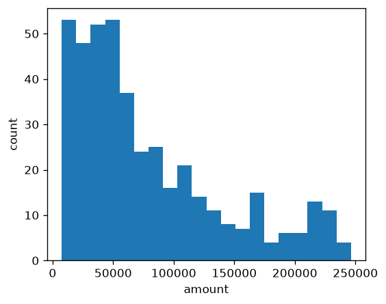
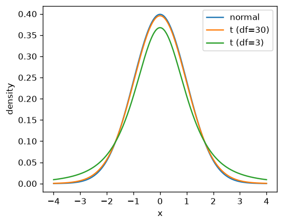
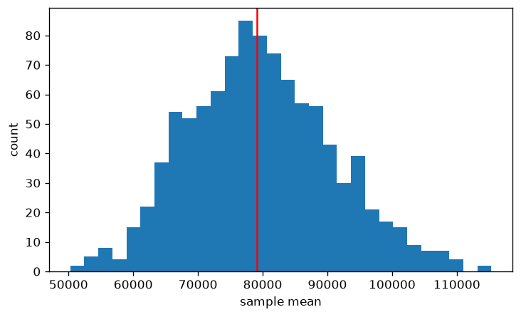
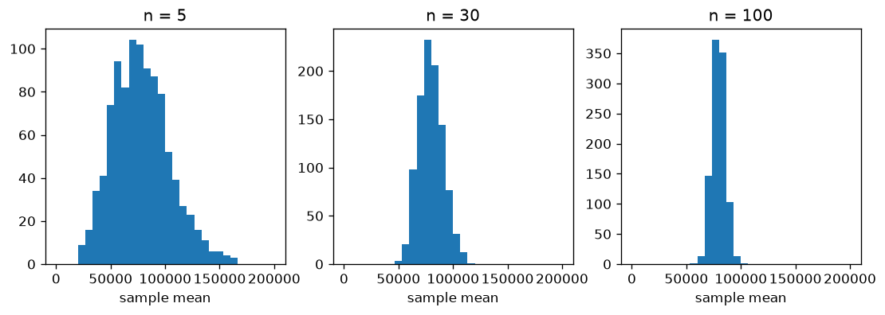
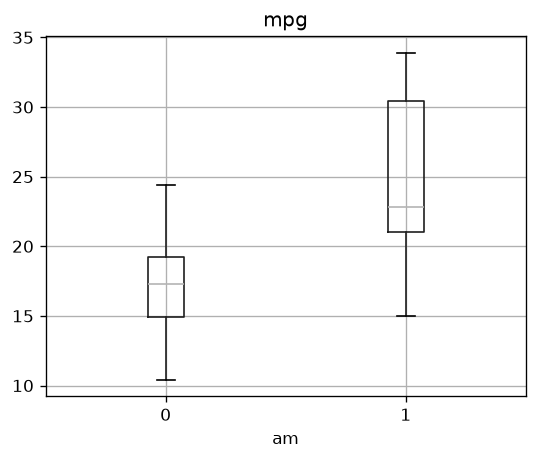

[6장] 통계학 개론: 표본, 분포, 추정, 검정
2027학년도 「빅데이터개론」의 준비 중인 교재입니다. 편집 상태를 검토하기 위해 미리 공개한 것으로, 수업 전에 내용과 순서가 바뀔 수 있습니다.
학사 7주차 · 교재 06 · 3부 데이터 분석 · ADsP 3과목 데이터분석 > 통계분석 (통계학 개론, 기초 통계분석 가운데 검정)
통계 분석은 모집단의 일부인 표본을 조사하여 모집단에 대해 판단하는 일이다. 이 장은 그 판단의 틀을 다룬다. 표본을 뽑는 방법, 자료를 재는 척도, 확률 분포, 표본에서 모집단의 값을 어림하는 추정, 주장이 맞는지 판단하는 가설 검정의 순서로 나간다. 시험은 이 범위에서 용어의 구분과 사례의 판단을 주로 묻고, t-검정은 R 출력을 읽는 문항으로도 나온다.
교재 05에서 다룬 평균, 표준편차, 왜도, 히스토그램, 상자그림을 전제로 한다. 이 장에서 익히는 가설 검정의 용어(귀무 가설, 유의 확률, 유의수준)는 교재 07부터 모든 결과표를 읽는 데 쓰인다. 다음 주(학사 8주차)는 중간시험이며 범위는 교재 01~06이다.
이 장의 핵심 용어 다섯을 먼저 정의해 둔다. 뒤의 절은 이 다섯을 차례로 풀어 쓴 것이다.
| 용어 | 첫 정의 | 다루는 절 |
|---|---|---|
| 표본 | 모집단에서 뽑아 실제로 조사한 일부 | 1절 |
| 확률 분포 | 확률 변수가 어떤 값을 어떤 확률로 갖는지를 나타낸 것 | 2절 |
| 표준 오차 | 통계량(표본 평균 등)이 표본에 따라 흔들리는 정도. 통계량의 표본 분포가 가지는 표준편차다 | 3절 |
| 신뢰 구간 | 모수가 들어 있을 것으로 보는 구간. 같은 방법을 되풀이할 때 모수를 맞히는 비율이 신뢰수준이다 | 3절 |
| 유의 확률 | 귀무 가설이 참일 때 지금의 표본만큼 또는 그보다 극단적인 결과가 나올 확률 | 4절 |
학습 목표
- 모집단과 표본, 모수와 통계량을 구분하고, 확률 표본 추출 방법 넷과 측정 척도 넷을 사례에 짝짓는다.
- 이산 확률 분포와 연속 확률 분포의 종류를 구분하고, 기댓값과 분산을 계산한다.
- 표본의 크기에 따라 표본 평균의 분포가 어떻게 달라지는지 설명하고, 신뢰 구간과 신뢰수준의 뜻을 바르게 읽는다.
- 가설 검정의 절차를 말하고, 제1종 오류와 제2종 오류, 유의수준과 유의 확률, 양측 검정과 단측 검정을 구분한다.
- t-검정의 세 종류와 비모수 검정을 사례에 맞게 고르고, 파이썬과 R의 검정 출력에서 t 값, 자유도, 유의 확률, 신뢰 구간을 읽는다.
수업의 흐름
- 시작하기(0절). 교재 05의 기술 통계 셋을 되짚고, 노트북의 첫 셀을 실행하여 이 장의 모집단(거래 428건의 금액)을 확인한다.
- 개념과 따라 하기(1~4절). 절마다 개념을 읽고, 따라 하기에서 결과를 먼저 예상한 뒤 셀을 실행하여 예상과 견준다. 1절은 표본을 뽑는 방법, 2절은 확률 분포, 3절은 표본 평균의 분포와 신뢰 구간, 4절은 가설 검정이다. 4절의 따라 하기에서 같은 판정을 기각역과 유의 확률의 두 길로 내리고, 제1종 오류와 검정력을 모의실험으로 센다.
- 중심 실습(5절). 표본의 크기에 따라 표본 평균의 분포가 좁아지는 것을 표로 확인하고, 변속기 종류에 따른 연비의 차이를 t-검정으로 판정하여 해석 문장 하나를 쓴다. 실습 끝의 복기에서 예상과 결과의 차이를 정리한다.
- R 출력 해석(6절). 같은 검정의 R 출력을 위에서부터 읽고, 시험이 묻는 값이 출력의 어느 줄에 있는지 확인한다.
- 연습 문제와 주간 문항 세트. 서술형 연습 문제(8절)로 계산과 해석을 직접 써 보고, 세트의 1~10번을 수업에서 푼다.
제목 끝에 [선택]이 붙은 소절은 3시간에 넘치는 부분이다. 수업에서 생략하면 노트북의 해당 셀만 실행하고 결과를 읽어 둔다.
준비 사항
| 항목 | 내용 |
|---|---|
| 실습 노트북 | ADsP_06주차_실습_학생용.ipynb. 「시작하기」, 「따라 하기 1~4」, 「중심 실습」의 절로 되어 있다 |
| 자료 | transactions.csv(가상 상점의 거래 428건. 금액 열을 쓴다), customers.csv(고객 60명의 지역), mtcars.csv(자동차 32종의 연비와 제원), sleep.csv(10명의 수면 시간 자료). 자료 폴더의 위치는 노트북 첫 코드 셀의 DATA에 적혀 있다 |
| 앞 장과의 연계 | 교재 05의 기술 통계(평균, 중앙값, 표준편차, 왜도)와 그림(히스토그램, 상자그림), 교재 04의 그룹별 집계를 전제로 한다. 리스트와 for 반복문, if 조건문은 「파이썬 기초」에서 배운 그대로 쓴다 |
| 실습 환경 | 접속과 자료를 받는 방법은 부록 A에 있다 |
0. 시작하기
0.1 지난 장 되짚기
교재 05 「결측값·이상값과 기술 통계」에서 이 장이 그대로 쓰는 것은 셋이다.
- 평균과 중앙값, 왜도. 오른쪽으로 꼬리가 긴 분포는 왜도가 양수이고 평균이 중앙값보다 크다. 이 장의 모집단인 거래 금액이 그런 분포다. 3절에서는 모집단이 이렇게 치우쳐 있어도 표본 평균의 분포는 대칭에 가까워진다는 것을 확인한다.
- 분산과 표준편차. 표준편차는 분산의 제곱근이며, 표본에서 구할 때에는 n - 1로 나눈다. 교재 05는 그 까닭을 미루어 두었다. 3.3절의 따라 하기에서 n으로 나누면 평균적으로 모분산보다 작게 나온다는 것을 모의실험으로 보인다.
- 상자그림. 상자의 양 끝은 Q1과 Q3, 안의 선은 중앙값이다. 4절에서는 두 집단의 연비를 상자그림으로 먼저 보고, 눈으로 본 차이가 우연으로 설명되는 크기인지를 t-검정으로 판정한다.
교재 05가 “자료를 요약하는 법”이었다면 이 장은 “요약한 값이 얼마나 믿을 만한가”를 다룬다. 표본에서 구한 평균 하나가 모집단에 대해 무엇을 말해 주는지, 두 평균의 차이가 우연인지를 판단하는 틀이 추정과 검정이다.
0.2 노트북 열기와 첫 셀의 실행
- 부록 A의 방법으로 JupyterLab을 열고
ADsP_06주차_실습_학생용.ipynb를 연다. - 「시작하기」 아래의 첫 코드 셀을 실행한다. 이 셀은 라이브러리 넷(numpy, pandas, matplotlib, scipy의
stats)을 불러오고 거래 자료를 읽어 금액의 요약을 낸다. - 출력을 아래와 견준다.
[그림 자리: JupyterLab에서 첫 셀을 실행한 화면] 노트북
ADsP_06주차_실습_학생용.ipynb의 「시작하기」 셀을 실행한 뒤의 화면. 셀 왼쪽의 실행 번호[1]과 셀 아래의 출력(428과describe()의 표)이 보이게 찍는다. 찍을 곳: 실습 환경의 JupyterLab.
sales = pd.read_csv(DATA + "transactions.csv")
amount = sales["금액"]
print(len(amount))
print(amount.describe().round(1))428
count 428.0
mean 79104.2
std 61154.7
min 7500.0
25% 32800.0
50% 57600.0
75% 111950.0
max 246400.0
Name: 금액, dtype: float64- 확인 1 첫 셀이 오류 없이 실행되어
428과 금액의 요약(mean79104.2,50%57600.0)이 나왔다.
ModuleNotFoundError가 나면 실습 환경에 라이브러리가 없는 것이고, FileNotFoundError가 나면 노트북이 자료 폴더와 다른 곳에 있는 것이다. 두 경우 모두 부록 A의 자료 배치를 확인한다.
0.3 이 장의 물음
출력의 mean(79104.2)이 50%(57600.0)보다 크다. 교재 05의 기준으로 금액은 오른쪽으로 꼬리가 긴 분포다. 이 장은 이 428건을 모집단으로 놓는다. 모집단을 다 알고 있으므로, 표본을 뽑았을 때 표본의 값이 모집단의 값에서 얼마나 벗어나는지를 직접 잴 수 있다. 실제 분석에서는 모집단을 모르므로 이 장의 모의실험이 그 상황을 대신 보여 준다.
이 장의 끝에서 답할 물음은 다음과 같다. 자동차 32종의 표본에서 수동 변속기 차의 평균 연비가 자동 변속기 차보다 7.2 높게 나왔다. 이 차이는 표본을 뽑을 때의 우연으로 생길 수 있는 크기인가, 아니면 모집단에서도 차이가 있다고 판단할 만한 크기인가. 1~3절은 이 물음에 답하는 데 필요한 도구(표본, 분포, 표준 오차)를 만들고, 4절과 5절에서 답한다.
- 확인 2 출력의
mean이50%보다 크다는 것으로부터, 교재 05의 기준에 따라 금액이 오른쪽으로 꼬리가 긴 분포라고 판정하였다.
1. 모집단과 표본
배경과 쓰임
국가데이터처(옛 통계청)의 통계용어사전은 전수 조사를 “모집단 내 모든 개체”의 자료를 모으는 조사로 정의하고, 비용이 매우 높으므로 인구·주택처럼 통계의 필요성이 매우 높은 분야에서 쓰인다고 해설한다. 그 밖의 국가 통계의 상당수는 표본 조사로 만들어진다. 같은 사전은 표본 오차를 “조사모집단 전체를 조사하지 않고 일부만 조사함에 따라 발생하는 오차”로, 비표본 오차를 그 밖에 조사 과정에서 생기는 모든 오차(포함 오차, 측정 오차, 무응답 오차, 처리 오차 등)로 정의한다. 따라서 공공 통계의 숫자를 읽을 때에는 그 숫자가 전수 조사의 값인지 표본 조사의 추정값인지를 먼저 확인하고, 표본 조사이면 함께 공표된 표본 오차(또는 상대 표준 오차)를 본다.
기업의 데이터 분석도 같은 구조다. 고객 만족도 조사, 제품의 출하 검사, 웹 서비스의 사용자 일부에게만 새 기능을 보여 주는 실험은 모두 일부를 조사하여 전체를 판단한다. 표본을 어떻게 뽑았는가가 결론의 신뢰도를 정한다. 시험은 이 절에서 표본 추출 방법의 이름과 사례, 오차의 종류, 척도를 묻는다.
[최신 자료 자리: 국가 통계의 표본 규모와 표본 오차의 공표 예] 경제활동인구조사 등 대표적인 표본 조사의 표본 가구 수, 표본 설계(층화, 집락), 공표하는 표본 오차나 상대 표준 오차의 값. 확인할 곳: 국가데이터처 통계설명자료 https://www.mods.go.kr/statDesc.es?mid=a10501010000, KOSIS의 조사 개요. 2026-11-16에 통계설명자료의 목록 쪽까지 확인하였고, 조사별 상세 값은 화면에서 읽지 못하였다. 수업 전에 다시 확인한다.
1.1 모집단, 표본, 모수, 통계량
알고자 하는 대상 전체를 모집단이라 하고, 모집단에서 뽑아 실제로 조사한 일부를 표본이라 한다. 모집단 전체를 조사하는 것이 전수 조사이고, 표본만 조사하는 것이 표본 조사다. 전수 조사는 비용과 시간이 많이 들고, 조사하면 대상이 망가지는 경우(제품의 수명 검사)에는 할 수 없다. 그래서 대부분의 분석은 표본으로 한다.
| 용어 | 뜻 | 예 |
|---|---|---|
| 모집단 | 알고자 하는 대상 전체 | 어느 상점의 한 해 거래 전체 |
| 표본 | 모집단에서 뽑아 조사한 일부 | 그 가운데 뽑은 거래 30건 |
| 모수 | 모집단의 특성을 나타내는 값. 모평균, 모분산, 모비율 | 거래 전체의 평균 금액 |
| 통계량 | 표본에서 계산한 값. 표본 평균, 표본 분산, 표본 비율 | 뽑은 30건의 평균 금액 |
모수는 정해져 있는 하나의 값이지만 보통은 알 수 없다. 통계량은 표본을 뽑을 때마다 달라진다. 통계 분석은 통계량으로 모수를 어림하는 일이다.
따라 하기에서는 가상 상점의 거래 428건 전체를 모집단으로 삼아, 모집단을 아는 상황에서 표본이 모집단을 얼마나 잘 대신하는지 확인한다.
1.2 표본 추출 방법
표본이 모집단을 잘 대표하려면 뽑는 과정에 조사자의 뜻이 끼어들지 않아야 한다. 모집단의 각 원소가 뽑힐 확률을 알 수 있게 뽑는 방법을 확률 표본 추출이라 하며, 다음 넷이 있다.
| 방법 | 절차 | 예 |
|---|---|---|
| 단순 임의 추출 | 모집단의 모든 원소에 번호를 매기고, 각 원소가 뽑힐 확률이 같도록 임의로 뽑는다 | 거래 428건에서 난수로 30건을 뽑는다 |
| 계통 추출 | 원소에 번호를 매겨 차례로 늘어놓고, 첫 구간에서 하나를 임의로 뽑은 뒤 일정한 간격으로 뽑는다 | 생산 순서대로 50번째마다 제품 하나를 검사한다 |
| 층화 추출 | 모집단을 성질이 비슷한 원소끼리 묶은 층으로 나누고, 모든 층에서 각각 임의로 뽑는다 | 고객을 연령대별로 나누고 연령대마다 10명씩 뽑는다 |
| 집락 추출 | 모집단을 여러 집락(군집)으로 나누고, 집락 몇 개를 임의로 뽑아 뽑힌 집락의 원소를 조사한다 | 지점 40곳 가운데 5곳을 뽑아 그 지점의 고객 전원을 조사한다 |
층화 추출과 집락 추출은 모집단을 먼저 나눈다는 점이 같아 혼동하기 쉽다. 차이는 다음과 같다.
| 구분 | 층화 추출 | 집락 추출 |
|---|---|---|
| 나누는 기준 | 층 안의 원소는 서로 비슷하고, 층과 층은 서로 다르게 나눈다 | 집락 안에는 여러 성질의 원소가 섞여 있고, 집락과 집락은 서로 비슷하다 |
| 뽑는 방식 | 모든 층에서 조금씩 뽑는다 | 일부 집락만 뽑고, 뽑힌 집락을 조사한다 |
| 목적 | 층마다 빠짐없이 대표되게 하여 추정의 정밀도를 높인다 | 조사 대상을 한곳에 모아 비용과 시간을 줄인다 |
방법마다 실무에서 따지는 점이 하나씩 있다.
- 계통 추출의 간격. 추출 간격은 모집단의 크기를 표본의 크기로 나누어 정한다. 거래 428건에서 30건을 뽑으면 428 ÷ 30 ≈ 14.3이므로 간격을 14로 잡는다. 모집단에 간격과 맞아떨어지는 주기가 숨어 있으면 표본이 치우친다. 예를 들어 하루 거래를 시간 순으로 늘어놓고 7일 간격으로 뽑으면 늘 같은 요일만 뽑힌다.
- 층화 추출의 배분. 전체 표본을 층에 나누어 주는 방법으로 균등 배분(층마다 같은 수), 비례 배분(층의 크기에 비례), 네이만 배분(층의 크기와 층 안의 흩어짐을 함께 고려)이 있다. 따라 하기 1은 품목군마다 6건씩 뽑는 균등 배분이다.
- 집락 추출의 집락. 집락은 지역, 학교, 매장처럼 원소들이 이미 묶여 있는 단위다. 모집단 전체의 명단을 만들기 어려울 때, 집락의 명단만 있으면 조사를 시작할 수 있다는 것이 장점이다.
한번 뽑은 원소를 되돌려 놓고 다시 뽑는 것을 복원 추출, 되돌려 놓지 않는 것을 비복원 추출이라 한다. 조사자가 편한 대로 대상을 고르는 방법(편의 추출 등)은 비확률 표본 추출이며, 표본이 모집단을 대표한다고 보기 어렵다.
1.3 표본 오차와 비표본 오차
표본으로 구한 값은 모수와 차이가 난다. 차이의 원인은 둘로 나눈다.
| 구분 | 표본 오차 | 비표본 오차 |
|---|---|---|
| 원인 | 모집단의 일부만 조사하기 때문에 생긴다 | 조사를 수행하는 과정에서 생긴다. 측정 도구의 잘못, 무응답, 거짓 응답, 입력 실수 등이다 |
| 표본의 크기를 키우면 | 줄어든다 | 줄지 않는다. 조사 규모가 커지면 오히려 늘 수 있다 |
| 전수 조사에서 | 생기지 않는다 | 생긴다 |
표본을 뽑는 방법이 잘못되어 모집단의 일부가 뽑힐 가능성이 다른 부분보다 낮아지는 것을 표본 편의라 한다. 인터넷 설문으로만 조사하면 인터넷을 쓰지 않는 사람이 빠지는 것이 그 예다. 표본 편의는 확률 표본 추출로 줄인다.
1.4 측정 척도
자료를 재는 기준을 척도라 한다. 척도에 따라 쓸 수 있는 연산과 통계 기법이 달라지므로, 분석에 앞서 변수의 척도를 확인한다.
| 척도 | 뜻 | 쓸 수 있는 연산 | 예 (학기 공통 자료) |
|---|---|---|---|
| 명목 척도 | 대상을 구분하는 이름이다. 순서가 없다 | 같다, 다르다 | 결제수단, 품목군, 지역, 고객ID |
| 서열 척도 | 순서가 있다. 간격은 일정하지 않다 | 위의 것, 크기 비교 | 연령대(20대, 30대, …), 만족도 5단계 |
| 등간 척도 | 간격이 일정하다. 절대적인 0이 없다 | 위의 것, 덧셈과 뺄셈 | 거래일(날짜), 섭씨 온도 |
| 비율 척도 | 간격이 일정하고 절대적인 0이 있다 | 위의 것, 곱셈과 나눗셈 | 수량, 금액, 무게 |
- 명목 척도와 서열 척도의 자료를 질적 자료(범주형 자료), 등간 척도와 비율 척도의 자료를 양적 자료(수치형 자료)라 한다.
- 절대적인 0은 “없음”을 뜻하는 0이다. 금액 0원은 금액이 없다는 뜻이므로 20만 원은 10만 원의 두 배라고 말할 수 있다. 섭씨 0도는 온도가 없다는 뜻이 아니므로 20도가 10도의 두 배라고 말할 수 없다.
- 숫자로 적혀 있다고 양적 자료인 것은 아니다. 우편번호나 등번호는 숫자이지만 명목 척도다.
- 대표값도 척도를 따른다. 명목 척도에는 최빈값, 서열 척도에는 중앙값과 최빈값을 쓰고, 평균은 등간 척도와 비율 척도에 쓴다.
따라 하기
노트북의 「따라 하기 1. 모집단과 표본」 셀을 위에서부터 실행한다. 0절에서 실행한 첫 셀의 sales와 amount를 그대로 쓴다.
예상. 셀을 실행하기 전에 다음 셋을 노트에 적는다. 답은 실행한 뒤에 밝힌다.
- 428건 전체를 모집단으로 보고 구한 표준편차(모표준편차)는 0절 출력의
std(61154.7)보다 클까, 작을까, 같을까. - 이 모집단에서 30건을 임의로 뽑아 평균을 내면 모평균 79104.2와 같게 나올까. 다르다면 몇천 원 단위일까, 몇만 원 단위일까.
- 네 가지 표본 추출 방법(1.2절) 가운데 뽑힌 표본의 크기가 30이 아닐 수 있는 방법은 어느 것일까.
실행과 결과. 다음 두 셀은 금액의 히스토그램을 그리고 모수를 구한다.
mu = amount.mean() # 모집단의 평균 (모수)
sigma = amount.std(ddof=0) # 모집단의 표준편차 (모수). ddof=0은 428로 나눈다는 뜻이다
print("모평균:", round(mu, 1))
print("모표준편차:", round(sigma, 1))
print("중앙값:", amount.median())
print("왜도:", round(stats.skew(amount), 3))
print("왜도(pandas):", round(amount.skew(), 3))모평균: 79104.2
모표준편차: 61083.2
중앙값: 57600.0
왜도: 1.06
왜도(pandas): 1.064
- 확인 3 모평균이 79104.2, 모표준편차가 61083.2, 중앙값이 57600.0으로 나왔다.
describe()의std(61154.7)는 모표준편차와 다르다.
해석. 금액은 오른쪽으로 꼬리가 길고 평균이 중앙값보다 크다(교재 05). describe()의 std는 n - 1(427)로 나눈 표본 표준편차이고, 모표준편차는 428건 전체를 모집단으로 보아 n으로 나눈다. 왜도가 1.06과 1.064로 다른 것도 같은 종류의 차이다. stats.skew()는 보정하지 않은 왜도를, pandas의 .skew()는 표본의 크기로 보정한 왜도를 낸다.
이 모집단에서 거래 30건을 임의로 뽑아 평균을 구한다.
rng = np.random.default_rng(2027) # 난수 생성기. 괄호 안의 수가 시드다
sample = rng.choice(amount, size=30) # 금액에서 30개를 임의로 뽑는다 (복원 추출)
print(sample[:10])
print("표본 평균:", round(sample.mean(), 1))
print("모평균:", round(mu, 1))[215700 11700 19200 146500 38400 107900 34800 94000 213300 79600]
표본 평균: 82593.3
모평균: 79104.2- 확인 4 표본 평균이 82593.3으로 모평균 79104.2와 달랐다.
표본 평균은 통계량이고 모평균은 모수다. 시드는 난수의 출발점을 정하는 수이며, 시드를 고정하면 실행할 때마다 같은 표본이 뽑힌다.
다음 네 셀은 1.2절의 네 방법으로 표본을 뽑는다. 단순 임의 추출은 행 번호 30개를 비복원 추출로(replace=False), 계통 추출은 0~13에서 정한 시작 위치부터 14행마다(iloc[start::k]), 층화 추출은 품목군마다 6건씩 뽑는다. 집락 추출은 고객의 지역 다섯 곳 가운데 두 곳을 뽑아 그 지역의 거래를 모두 조사한다.
단순 임의 추출: 30 건, 평균 66596.7
시작 위치: 8
계통 추출: 30 건, 평균 72633.3
품목군
가전 6
도서 6
생활 6
식품 6
의류 6
Name: count, dtype: int64
층화 추출: 30 건, 평균 91043.3
지역: ['경기', '광주', '대전', '부산', '서울']
뽑힌 지역: ['경기' '대전']
집락 추출: 143 건, 평균 74988.1- 확인 5 층화 추출의 표본에 다섯 품목군이 6건씩 들어 있고, 집락 추출의 표본은 뽑힌 두 지역(경기, 대전)의 거래 143건이었다.
네 표본의 평균은 모두 모평균과 다르다. 이 차이가 표본 오차다. 집락 추출은 뽑힌 집락의 원소를 모두 조사하므로 표본의 크기가 뽑힌 집락에 따라 달라진다.
마지막 셀은 열마다 자료형을 보인다.
거래ID str
고객ID str
거래일 str
품목군 str
수량 int64
금액 int64
결제수단 str
dtype: object- 확인 6
수량과금액은int64, 나머지 다섯 열은str로 나왔다.
자료형은 저장하는 방식이고 척도는 값이 뜻하는 바다. 거래일은 글자로 저장된 등간 척도이고, 고객 번호가 1001처럼 정수로 저장되었더라도 척도는 명목 척도다.
복기
| 예상 | 결과 | 차이의 까닭 |
|---|---|---|
1. 모표준편차와 std의 크기 |
모표준편차 61083.2가 std 61154.7보다 작다 |
std는 n - 1(427)로, 모표준편차는 n(428)으로 나눈다. 나누는 수가 작을수록 값이 크다. n이 클수록 둘의 차이는 작아진다 |
| 2. 표본 평균과 모평균 | 82593.3과 79104.2. 차이는 약 3,500원 | 표본 오차다. 금액의 표준편차가 6만 원대인데 차이가 몇천 원에 그친 까닭은 3절의 표준 오차가 설명한다 |
| 3. 크기가 30이 아닌 표본 | 집락 추출이 143건 | 집락 추출은 뽑힌 집락의 원소를 모두 조사하므로 표본의 크기를 미리 정할 수 없다 |
네 표본의 평균(66596.7, 72633.3, 91043.3, 74988.1)은 모두 모평균과 다르고, 어느 방법이 가장 가까운지도 표본 하나로는 말할 수 없다. 방법의 좋고 나쁨은 같은 방법을 여러 번 되풀이했을 때의 흩어짐으로 견준다. 그 흩어짐을 재는 도구가 3절의 표본 분포다.
2. 확률 분포
배경과 쓰임
확률 분포는 “이 정도 결과는 얼마나 흔한가”를 계산하는 기준이다. 출하 검사에서 100개 가운데 불량품이 3개 나왔을 때 그것이 평소의 불량률로 설명되는지는 이항 분포로 따진다. 콜센터나 응급실이 한 시간에 받는 전화와 환자의 수는 포아송 분포로 놓고 인력을 배치하며, 장비가 고장 날 때까지의 시간은 지수 분포로 놓고 점검 주기를 정한다. 측정값의 오차와 표본 평균은 정규 분포로 다룬다.
이 장에서 확률 분포가 하는 일은 하나 더 있다. 4절의 검정은 “귀무 가설이 참이라면 검정 통계량이 어떤 분포를 따르는가”를 알아야 유의 확률을 계산할 수 있다. 평균의 검정에는 t 분포, 분산의 비에는 F 분포, 범주형 자료의 빈도에는 카이제곱 분포가 그 기준이 된다. 2.4절의 표에서 분포마다 “쓰이는 곳”을 적은 까닭이다. 시험은 분포의 이름과 쓰임을 짝짓게 하거나 기댓값과 분산을 계산하게 한다.
2.1 확률 변수와 확률 분포
확률 변수는 우연에 따라 값이 정해지는 변수다. 동전을 두 번 던져 앞면이 나온 횟수, 표본으로 뽑힌 거래의 금액이 확률 변수다. 확률 변수가 어떤 값을 어떤 확률로 갖는지를 나타낸 것이 확률 분포다.
| 구분 | 이산 확률 변수 | 연속 확률 변수 |
|---|---|---|
| 값 | 하나씩 셀 수 있다(0, 1, 2, …) | 구간 안의 모든 실수 |
| 확률을 나타내는 함수 | 확률 질량 함수. 값 하나하나에 확률을 준다 | 확률 밀도 함수. 곡선 아래의 넓이가 확률이다 |
| 한 값의 확률 | 0보다 클 수 있다 | 0이다. 확률은 구간에 대해서만 구한다 |
| 예 | 불량품의 개수, 방문 횟수 | 무게, 시간, 금액 |
어느 분포든 모든 확률을 더하면(연속이면 곡선 아래의 전체 넓이가) 1이다.
2.2 기댓값과 분산
기댓값은 확률 변수가 갖는 값을 확률로 가중하여 평균한 값이다. 같은 시행을 한없이 되풀이할 때 평균적으로 얻는 값이며, 확률 분포의 중심을 나타낸다.
기댓값 = (값 × 그 값의 확률)을 모두 더한 것
분산은 확률 변수의 값이 기댓값에서 떨어진 정도를 나타낸다. 편차(값 - 기댓값)의 제곱을 확률로 가중하여 평균한 값이다. 표준편차는 분산의 제곱근이다.
분산 = ((값 - 기댓값)² × 그 값의 확률)을 모두 더한 것
동전을 두 번 던져 앞면이 나온 횟수를 X라 하면 분포는 다음과 같다.
| X의 값 | 0 | 1 | 2 |
|---|---|---|---|
| 확률 | 0.25 | 0.5 | 0.25 |
- 기댓값 = 0 × 0.25 + 1 × 0.5 + 2 × 0.25 = 1
- 분산 = (0 - 1)² × 0.25 + (1 - 1)² × 0.5 + (2 - 1)² × 0.25 = 0.5
확률 변수에 상수를 곱하고 더했을 때의 성질은 다음과 같다. a와 b는 상수다.
- aX + b의 기댓값 = a × (X의 기댓값) + b
- aX + b의 분산 = a² × (X의 분산). 상수를 더하는 것은 분산을 바꾸지 않는다.
2.3 이산 확률 분포
| 분포 | 무엇의 분포인가 | 평균과 분산 |
|---|---|---|
| 베르누이 분포 | 결과가 성공과 실패 둘뿐인 시행을 한 번 했을 때의 성공 여부(1 또는 0). 성공 확률은 p다 | 평균 p, 분산 p(1 - p) |
| 이항 분포 | 성공 확률이 p인 베르누이 시행을 독립적으로 n번 했을 때의 성공 횟수 | 평균 np, 분산 np(1 - p) |
| 기하 분포 | 성공 확률이 p인 베르누이 시행을 되풀이할 때, 첫 성공이 나올 때까지의 시행 횟수 | 평균 1 ÷ p |
| 포아송 분포 | 정해진 시간이나 공간 안에서 사건이 일어나는 횟수. 단위 시간의 평균 발생 횟수가 모수다 | 평균과 분산이 같다 |
2.4 연속 확률 분포
| 분포 | 특징 | 쓰이는 곳 |
|---|---|---|
| 균등 분포 | 구간 안의 모든 값이 같은 밀도를 가진다 | 난수 |
| 정규 분포 | 평균을 중심으로 좌우가 대칭인 종 모양이다. 평균과 표준편차 두 모수로 정해진다. 평균이 0이고 표준편차가 1인 것을 표준 정규 분포라 한다 | 측정값의 분포, 표본 평균의 분포 |
| 지수 분포 | 사건이 일어날 때까지 걸리는 시간의 분포다. 오른쪽으로 꼬리가 길다 | 대기 시간, 고장까지의 시간 |
| t 분포 | 0을 중심으로 대칭이며 표준 정규 분포보다 꼬리가 두껍다. 자유도가 커질수록 표준 정규 분포에 가까워진다 | 모표준편차를 모를 때 평균의 추정과 검정 |
| 카이제곱 분포 | 0 이상의 값만 가지며 오른쪽으로 꼬리가 길다. 자유도 하나로 정해진다 | 분산의 추정과 검정, 범주형 자료의 적합도 검정과 독립성 검정 |
| F 분포 | 0 이상의 값만 가지며 오른쪽으로 꼬리가 길다. 자유도 둘로 정해진다 | 두 집단의 분산 비교, 분산분석, 회귀 모형의 유의성 검정 |
포아송 분포와 지수 분포는 짝을 이룬다. 한 시간 동안 들어오는 주문의 수는 포아송 분포로, 주문과 주문 사이의 시간은 지수 분포로 나타낸다. 한 시간에 평균 2건이 들어오면 주문 사이의 평균 시간은 1 ÷ 2 = 0.5시간이다.
값에서 평균을 빼고 표준편차로 나누는 것을 표준화라 한다. 정규 분포를 따르는 변수를 표준화하면 표준 정규 분포를 따른다. 그래서 평균과 표준편차가 무엇이든 정규 분포의 확률은 표준 정규 분포 하나로 구할 수 있다.
따라 하기
노트북의 「따라 하기 2. 확률 분포」 셀을 실행한다. scipy.stats에는 2.3절과 2.4절의 분포가 들어 있다. 함수의 이름은 다음과 같다.
| 함수 | 하는 일 | 쓰는 분포 |
|---|---|---|
pmf(값, 모수) |
그 값을 가질 확률 | 이산 분포(binom, poisson, geom) |
pdf(값, 모수) |
그 값에서의 확률 밀도(곡선의 높이) | 연속 분포(norm, t, chi2, f, expon) |
cdf(값, 모수) |
그 값 이하일 확률(누적 확률) | 모든 분포 |
ppf(누적 확률, 모수) |
누적 확률이 그 값이 되는 자리. cdf의 반대다 |
모든 분포 |
mean(모수), var(모수) |
분포의 평균과 분산 | 모든 분포 |
예상. 다음 넷을 먼저 손으로 어림하여 적는다.
- 동전을 두 번 던져 앞면이 나온 횟수의 기댓값과 분산(2.2절의 표로 계산한다).
- 동전을 10번 던져 앞면이 정확히 5번 나올 확률은 0.5보다 클까, 작을까.
- 표준 정규 분포에서 평균의 양쪽 2 표준편차 안에 드는 확률은 대략 몇 %일까.
- 가운데 95%를 남기는 값은 표준 정규 분포에서 1.96이다. 자유도 5인 t 분포에서는 1.96보다 클까, 작을까.
실행과 결과. 첫 셀은 2.2절의 동전 예에서 기댓값과 분산을 반복문으로 계산한다. 값과 확률을 리스트에 담고, 값 × 확률을 하나씩 더한다.
values = [0, 1, 2] # X가 가질 수 있는 값
probs = [0.25, 0.5, 0.25] # 각 값의 확률
ev = 0
for i in range(3):
ev = ev + values[i] * probs[i] # 값 × 확률을 더한다
var = 0
for i in range(3):
var = var + (values[i] - ev) ** 2 * probs[i] # (값 - 기댓값)² × 확률을 더한다
print("기댓값:", ev)
print("분산:", var)
print("이항 분포 B(2, 0.5)의 평균과 분산:", stats.binom.mean(2, 0.5), stats.binom.var(2, 0.5))기댓값: 1.0
분산: 0.5
이항 분포 B(2, 0.5)의 평균과 분산: 1.0 0.5- 확인 7 반복문으로 계산한 기댓값 1.0과 분산 0.5가 이항 분포 B(2, 0.5)의 평균, 분산과 같았다.
동전을 두 번 던진 앞면의 수는 이항 분포 B(2, 0.5)를 따르므로 평균 np = 1, 분산 np(1 - p) = 0.5다.
다음 셀들은 이산 분포의 확률과 평균을 구한다.
# 이항 분포: 성공 확률이 0.5인 시행을 10번 할 때 성공이 정확히 3번일 확률
print(round(stats.binom.pmf(3, 10, 0.5), 4))
# 포아송 분포: 한 시간에 평균 2건이 일어나는 사건이 한 시간에 한 건도 일어나지 않을 확률
print(round(stats.poisson.pmf(0, 2), 4))0.1172
0.1353k = list(range(11)) # 성공 횟수 0부터 10까지
p = stats.binom.pmf(k, 10, 0.5)
print(p.round(4))
print("확률의 합:", round(p.sum(), 4))[0.001 0.0098 0.0439 0.1172 0.2051 0.2461 0.2051 0.1172 0.0439 0.0098
0.001 ]
확률의 합: 1.0그다음 셀은 세 분포의 평균과 분산을 mean()과 var()로 구한다.
이항 B(10, 0.5) 평균 5.0 분산 2.5
포아송(평균 2) 평균 2.0 분산 2.0
기하(p = 0.2) 평균 5.0- 확인 8 B(10, 0.5)에서 성공이 3번일 확률이 0.1172이고, 11개 확률의 합이 1.0이며, 포아송 분포(평균 2)의 평균과 분산이 모두 2.0으로 나왔다.
이항 분포의 확률은 성공 5번에서 가장 크고(0.2461) 좌우가 대칭이다. 한 시간에 평균 2건의 주문이 들어오는 상점에서 한 시간 동안 주문이 없을 확률은 0.1353이다. 기하 분포의 평균은 1 ÷ 0.2 = 5다.
다음 셀은 정규 분포와 t 분포의 누적 확률과 분위수를 구한다.
# 표준 정규 분포에서 평균의 양쪽 1, 2, 3 표준편차 안에 들 확률
print(round(stats.norm.cdf(1) - stats.norm.cdf(-1), 4))
print(round(stats.norm.cdf(2) - stats.norm.cdf(-2), 4))
print(round(stats.norm.cdf(3) - stats.norm.cdf(-3), 4))
# 가운데 95%를 남기는 값: 표준 정규 분포, 자유도 31인 t 분포, 자유도 5인 t 분포
print(round(stats.norm.ppf(0.975), 4))
print(round(stats.t.ppf(0.975, 31), 4))
print(round(stats.t.ppf(0.975, 5), 4))0.6827
0.9545
0.9973
1.96
2.0395
2.5706- 확인 9 표준 정규 분포에서 가운데 95%를 남기는 값이 1.96, 자유도 31인 t 분포에서 2.0395, 자유도 5인 t 분포에서 2.5706으로 나왔다.
정규 분포에서는 평균의 양쪽 1, 2, 3 표준편차 안에 약 68%, 95%, 99.7%가 들어 있다. 가운데 95%를 남기면 양쪽 꼬리에 2.5%씩 남으므로 ppf(0.975)로 구한다. t 분포는 꼬리가 두꺼워 같은 95%를 남기려면 1.96보다 멀리 가야 하고, 자유도가 커질수록 1.96에 가까워진다.
표준화, 카이제곱 분포, F 분포의 값 [선택]
이 소절의 세 셀은 2.4절의 표준화와, 교재 07에서 쓰는 분포의 값을 확인한다. 수업에서 생략하면 셀만 실행하고 확인 10의 값을 읽어 둔다.
다음 셀은 표준화를 확인한다. 평균 100, 표준편차 15인 정규 분포에서 110 이하일 확률을 바로 구한 것과, 110을 표준화한 값으로 표준 정규 분포에서 구한 것이 같다.
0.7475
0.6667 0.7475
자유도 3인 t 분포는 가운데가 낮고 양쪽 꼬리가 두껍다. 자유도 30인 t 분포는 표준 정규 분포와 거의 겹친다.
마지막 셀은 이 장과 다음 장에서 쓰는 분포의 값을 구한다.
# 오른쪽 꼬리 5%를 남기는 값: 카이제곱 분포(자유도 1), F 분포(자유도 2와 29)
print(round(stats.chi2.ppf(0.95, 1), 4))
print(round(stats.f.ppf(0.95, 2, 29), 4))
# 지수 분포: 사건이 한 시간에 평균 2건 일어날 때 사건 사이의 평균 시간(시간 단위)
print(stats.expon.mean(scale=1 / 2))3.8415
3.3277
0.5- 확인 10 표준화한 값 0.6667에서의 누적 확률이 0.7475로 바로 구한 값과 같고, 자유도 2와 29인 F 분포의 오른쪽 5% 자리가 3.3277로 나왔다.
카이제곱 분포와 F 분포는 0 이상의 값만 가지므로 기각역이 오른쪽 꼬리에 있다. 자유도 2와 29인 F 분포는 교재 07의 회귀 모형 검정에 쓰인다.
복기
| 예상 | 결과 | 차이의 까닭 |
|---|---|---|
| 1. 기댓값과 분산 | 1.0과 0.5 | 값 × 확률의 합, (값 - 기댓값)² × 확률의 합. 이항 분포의 식 np와 np(1 - p)로도 같다 |
| 2. 10번 가운데 정확히 5번 | 0.2461 | 가장 흔한 결과도 정확히 그 값이 나올 확률은 4분의 1이 안 된다. 확률은 0부터 10까지 11개 값에 나뉘어 있다 |
| 3. 양쪽 2 표준편차 안 | 0.9545 | 정규 분포의 68-95-99.7 규칙이다 |
| 4. 자유도 5인 t 분포의 값 | 2.5706. 1.96보다 크다 | t 분포는 꼬리가 두꺼워 같은 95%를 남기려면 더 멀리 가야 한다. 자유도 31에서는 2.0395로 1.96에 가까워진다 |
넷째 결과가 4절에서 쓰인다. 표본이 작을수록(자유도가 작을수록) 같은 유의수준에서 기각하는 데 필요한 t 값이 커진다. 작은 표본으로는 차이를 확신하기 어렵다는 것이 분포의 모양에 들어 있는 것이다.
3. 표본 분포와 추정
배경과 쓰임
추정의 결과는 값 하나가 아니라 “값과 그 값의 오차”로 보고한다. 여론조사의 보도에 표본의 크기와 함께 “95% 신뢰수준에서 표본 오차 ±3.1%포인트”처럼 적힌 문구가 그 예다. 이 ±3.1%포인트는 이 절의 식으로 직접 계산할 수 있다(3.6절). 국가데이터처의 통계용어사전은 표준 오차를 “통계량의 표본분포가 가지는 표준편차”로 정의하고, 표준편차가 자료의 변동성인 반면 표준 오차는 통계량의 변동성이므로 둘을 명확히 구분해 써야 한다고 해설한다. 같은 사전은 신뢰수준을 “여러 번 구한 신뢰구간 중 추정하고자 하는 모수를 포함하는 신뢰구간의 비율”로 정의한다. 이 절의 3.5절과 같은 정의다.
기업의 분석 보고서도 같다. “고객 1인당 평균 구매액은 8만 원이다”보다 “표본 30명에서 추정한 1인당 평균 구매액은 8만 원이고, 95% 신뢰 구간은 6만 원에서 10만 원이다”가 의사 결정에 쓸 수 있는 정보다. 구간이 넓으면 표본을 더 모아야 한다는 판단까지 이어진다. 시험은 이 절에서 중심극한정리, 표준 오차의 계산, 좋은 추정량의 조건, 신뢰 구간의 해석을 묻는다.
[최신 자료 자리: 선거 여론조사 결과의 공표 기준] 여론조사 결과를 공표하거나 보도할 때 함께 밝혀야 하는 사항(표본의 크기, 표본 오차, 신뢰수준 등)과 그 근거 규정. 확인할 곳: 중앙선거여론조사심의위원회 https://www.nesdc.go.kr의 「선거여론조사기준」, 국가법령정보센터의 「공직선거법」 제108조. 2026-11-16에 규정의 원문을 열지 못하여 본문에는 계산만 실었다. 수업 전에 확인한다.
3.1 표본 평균의 분포
표본을 뽑을 때마다 표본 평균이 달라지므로 표본 평균도 확률 변수이고 분포를 가진다. 통계량의 분포를 표본 분포라 한다.
[그림 자리: 표본 분포의 개념도] 왼쪽에 오른쪽으로 치우친 모집단의 히스토그램(거래 금액), 가운데에 그 모집단에서 뽑은 크기 30인 표본 세 개(표본마다 평균을 적은 작은 상자), 오른쪽에 표본 평균 1,000개가 이루는 종 모양의 분포를 화살표로 잇는 도식. 오른쪽 분포의 가로 폭에 “표준 오차 = 모표준편차 ÷ √n”을 적는다. 그림 안의 글자는 영문(population, sample 1, sample mean, standard error)으로 쓴다. 만들 곳: 도식 편집기.
모집단의 분포, 표본 하나의 분포, 표본 평균의 분포는 서로 다른 세 분포다. 모집단의 분포는 고정되어 있고, 표본 하나의 분포는 모집단을 닮되 표본마다 조금씩 다르며, 표본 평균의 분포는 표본을 여러 번 뽑아야만 보이는 분포다. 따라 하기에서 표본을 1,000번 뽑아 확인하는 표본 평균의 분포는 다음과 같다.
- 표본 평균의 분포의 중심은 모평균이다.
- 표본 평균은 원자료보다 좁게 퍼진다. 그 표준편차는 모표준편차를 n의 제곱근으로 나눈 값에 가깝다.
- 모양이 대칭에 가까운 종 모양이다. 모집단이 오른쪽으로 치우쳐 있어도 그렇다.
표본 평균의 표준편차를 표준 오차라 한다.
표본 평균의 표준 오차 = 모표준편차 ÷ √n
표준편차는 자료 하나하나가 흩어진 정도이고, 표준 오차는 통계량(표본 평균)이 표본에 따라 흔들리는 정도다. 모표준편차를 모를 때에는 표본 표준편차를 대신 넣어 계산한다.
3.2 중심극한정리
표본의 크기를 바꾸어 같은 일을 하면 다음이 드러난다.
모집단의 분포가 어떤 모양이든, 표본의 크기가 충분히 크면 표본 평균의 분포는 정규 분포에 가까워진다. 그 평균은 모평균이고 표준편차는 모표준편차 ÷ √n이다.
이것이 중심극한정리다. 흔히 n이 30 이상이면 충분히 크다고 본다. 모집단이 정규 분포이면 n이 작아도 표본 평균은 정규 분포를 따른다. 중심극한정리는 표본 평균의 분포에 대한 정리다. 표본을 크게 뽑는다고 모집단이나 표본 자료 자체의 분포가 정규 분포로 바뀌는 것은 아니다.
3.3 점 추정과 좋은 추정량의 조건
표본으로 모수를 어림하는 것을 추정이라 한다. 모수를 하나의 값으로 어림하는 것이 점 추정이다. 모평균은 표본 평균으로, 모분산은 표본 분산으로, 모비율은 표본 비율로 추정한다. 추정에 쓰는 통계량을 추정량이라 한다.
좋은 추정량의 조건으로 흔히 다음 넷을 든다.
| 조건 | 뜻 |
|---|---|
| 불편성 | 추정량의 기댓값이 모수와 같다. 표본을 여러 번 뽑아 추정하면 평균적으로 모수를 맞힌다 |
| 효율성 | 불편 추정량 가운데 분산이 작다. 추정값이 표본에 따라 덜 흔들린다 |
| 일치성 | 표본의 크기가 커질수록 추정량이 모수에 가까워진다 |
| 충족성 | 추정량이 표본에 든 모수에 관한 정보를 빠짐없이 쓴다 |
따라 하기의 결과에 견주면, 표본 평균 1,000개의 평균이 모평균 가까이에 있는 것이 불편성이고, n이 커질수록 표본 평균이 모평균 둘레에 좁게 모이는 것이 일치성이다. 표본 분산을 구할 때 n이 아니라 n - 1로 나누는 것은 그렇게 해야 표본 분산이 모분산의 불편 추정량이 되기 때문이다. n으로 나눈 분산은 평균적으로 모분산보다 작게 나온다.
3.4 구간 추정
점 추정은 값 하나만 내므로 그 값이 얼마나 믿을 만한지 알 수 없다. 구간 추정은 모수가 들어 있을 것으로 보는 구간을 낸다. 이 구간을 신뢰 구간이라 하고, 구간을 만드는 방법이 모수를 맞히는 비율을 신뢰수준이라 한다. 신뢰수준은 흔히 90%, 95%, 99%를 쓴다.
모평균의 신뢰 구간 = 표본 평균 ± (분포에서 읽은 값) × 표준 오차
모표준편차를 모르면 표본 표준편차로 표준 오차를 구하고, 분포는 자유도가 n - 1인 t 분포를 쓴다. 신뢰 구간의 길이는 다음에 따라 달라진다.
| 바뀌는 것 | 신뢰 구간의 길이 |
|---|---|
| 신뢰수준을 높인다(95%에서 99%로) | 길어진다. 분포에서 읽는 값이 커지기 때문이다 |
| 표본의 크기를 키운다 | 짧아진다. 표준 오차가 줄기 때문이다 |
| 자료의 표준편차가 크다 | 길어진다 |
3.5 신뢰수준의 뜻
신뢰수준 95%는, 같은 방법으로 표본을 뽑아 신뢰 구간을 만드는 일을 여러 번 되풀이할 때 그 구간들 가운데 약 95%가 모수를 포함한다는 뜻이다.
실제 분석에서는 표본을 한 번만 뽑으므로 구간도 하나다. 그 구간이 모수를 품었는지는 알 수 없다. 신뢰 구간을 잘못 읽은 예는 다음과 같다. 예의 구간은 따라 하기에서 구하는 mtcars 연비의 95% 신뢰 구간(17.9177에서 22.2636까지)이다.
| 잘못 읽은 문장 | 틀린 까닭 |
|---|---|
| 모평균이 이 구간 안에 있을 확률이 95%다 | 모평균은 정해진 값이다. 이미 구한 구간은 모평균을 품었거나 품지 못했거나 둘 중 하나다. 95%는 구간을 만드는 방법이 맞히는 비율이다 |
| 자동차의 95%는 연비가 이 구간 안에 있다 | 신뢰 구간은 자료 하나하나의 범위가 아니라 모평균에 대한 구간이다 |
| 표본을 다시 뽑으면 표본 평균이 이 구간 안에 있을 확률이 95%다 | 신뢰 구간은 다음 표본의 평균이 아니라 모수를 겨냥한다 |
3.6 오차 한계와 표본의 크기
신뢰 구간의 반쪽 길이, 곧 “(분포에서 읽은 값) × 표준 오차”를 오차 한계라 한다. 보도에서 “표본 오차 ±○○”라고 적는 값이 이것이다. 오차 한계의 식을 거꾸로 풀면, 원하는 오차 한계를 얻는 데 필요한 표본의 크기를 조사 전에 정할 수 있다.
필요한 표본의 크기 n = (분포에서 읽은 값 × 모표준편차 ÷ 오차 한계)²
모표준편차를 모르면 예비 조사나 지난 조사의 값을 쓴다. 비율을 추정할 때에는 모표준편차 자리에 √(p(1 - p))를 쓰며, 비율 p를 모르면 이 값이 가장 커지는 p = 0.5를 넣어 넉넉하게 잡는다. 계산 예는 다음과 같다(신뢰수준 95%, 분포에서 읽은 값 1.96).
| 상황 | 계산 | 결과 |
|---|---|---|
| 1,000명에게 찬반을 물은 조사의 오차 한계 | 1.96 × √(0.5 × 0.5 ÷ 1000) | 약 0.031, 곧 ±3.1%포인트 |
| 오차 한계를 절반(±1.55%포인트)으로 줄이려면 | 표본의 크기를 2² = 4배로 | 4,000명 |
| 거래 금액의 모평균을 ±10,000원 안으로 추정하려면 | (1.96 × 61083.2 ÷ 10000)² | 약 143.3이므로 144건(따라 하기 3에서 계산한다) |
오차 한계가 √n에 반비례하므로 정밀도를 두 배로 높이는 비용은 네 배다. 조사를 설계할 때 표본의 크기는 이 비용과 필요한 정밀도를 견주어 정한다. 다만 이 계산은 표본 오차만 다룬다. 응답률이 낮거나 질문이 치우친 데서 오는 비표본 오차(1.3절)는 표본을 키워도 줄지 않는다.
따라 하기
노트북의 「따라 하기 3. 표본 분포와 추정」 셀을 실행한다.
예상. 다음 넷을 먼저 적는다.
- 크기 30인 표본의 평균 1,000개를 모으면, 그 1,000개의 표준편차는 금액의 표준편차(약 61,000)와 비슷할까, 훨씬 작을까. 3.1절의 식으로 어림한다.
- n을 5에서 100으로 키우면 표본 평균의 히스토그램은 어떻게 바뀔까(폭과 모양).
mtcars의 연비로 구한 95% 신뢰 구간과 99% 신뢰 구간 가운데 어느 쪽이 길까.- 95% 신뢰 구간을 100개 만들면 모평균을 품지 못하는 구간은 몇 개쯤일까.
실행과 결과. 첫 셀은 크기 30인 표본을 1,000번 뽑는다.
rng = np.random.default_rng(2027)
means = rng.choice(amount, size=(1000, 30)).mean(axis=1)
print(means.shape)
print(means[:5].round(1))
print("표본 평균 1,000개의 평균:", round(means.mean(), 1))
print("표본 평균 1,000개의 표준편차:", round(means.std(), 1))
print("모표준편차 ÷ 루트 n:", round(sigma / np.sqrt(30), 1))(1000,)
[82593.3 85880. 82620. 91016.7 63433.3]
표본 평균 1,000개의 평균: 79739.8
표본 평균 1,000개의 표준편차: 11160.6
모표준편차 ÷ 루트 n: 11152.2둘째 줄을 두 부분으로 나누어 읽는다.
| 부분 | 하는 일 |
|---|---|
rng.choice(amount, size=(1000, 30)) |
금액에서 값을 1,000 × 30개 뽑아 1,000행 30열의 표로 놓는다. 한 행이 크기 30인 표본 하나다 |
.mean(axis=1) |
행마다 평균을 구한다. axis=1은 한 행 안에서 가로 방향으로 계산하라는 뜻이다. 결과는 표본 평균 1,000개다 |
다음 셀은 같은 일을 「파이썬 기초」의 for 반복문과 리스트로 한다. 표본 하나를 뽑아 평균을 리스트에 넣는 일을 1,000번 되풀이한다.
rng = np.random.default_rng(2027)
means_loop = []
for i in range(1000):
one = rng.choice(amount, size=30)
means_loop.append(one.mean())
print(len(means_loop))
print(np.round(means_loop[:5], 1))
print("앞 셀의 결과와 같은가:", np.allclose(means, means_loop))1000
[82593.3 85880. 82620. 91016.7 63433.3]
앞 셀의 결과와 같은가: True- 확인 11 표본 평균 1,000개의 평균이 79739.8, 표준편차가 11160.6으로 나왔고, 반복문으로 구한 결과와 같은가를 묻는 줄에
True가 나왔다.
같은 시드에서 같은 순서로 뽑았으므로 두 방법의 결과가 같다. 표본 평균의 표준편차 11160.6은 모표준편차 ÷ √30(11152.2)과 거의 같고 금액의 표준편차보다 훨씬 작다.

다음 셀은 표본의 크기 n을 5, 30, 100으로 바꾸어 같은 일을 한다. 세 경우 모두 같은 시드에서 시작한다.
rng = np.random.default_rng(2027)
means5 = rng.choice(amount, size=(1000, 5)).mean(axis=1)
rng = np.random.default_rng(2027)
means30 = rng.choice(amount, size=(1000, 30)).mean(axis=1)
rng = np.random.default_rng(2027)
means100 = rng.choice(amount, size=(1000, 100)).mean(axis=1)
print("n=5 평균", round(means5.mean(), 1), " 표준편차", round(means5.std(), 1), " 왜도", round(stats.skew(means5), 3))
print("n=30 평균", round(means30.mean(), 1), " 표준편차", round(means30.std(), 1), " 왜도", round(stats.skew(means30), 3))
print("n=100 평균", round(means100.mean(), 1), " 표준편차", round(means100.std(), 1), " 왜도", round(stats.skew(means100), 3))
print("모표준편차 ÷ 루트 n:", round(sigma / np.sqrt(5), 1), round(sigma / np.sqrt(30), 1), round(sigma / np.sqrt(100), 1))n=5 평균 78203.6 표준편차 26146.9 왜도 0.464
n=30 평균 79739.8 표준편차 11160.6 왜도 0.242
n=100 평균 79429.1 표준편차 6139.5 왜도 0.114
모표준편차 ÷ 루트 n: 27317.2 11152.2 6108.3
- 확인 12 n이 5, 30, 100으로 커질 때 표본 평균의 표준편차가 26146.9, 11160.6, 6139.5로, 왜도가 0.464, 0.242, 0.114로 줄었다.
세 경우 모두 중심은 모평균 가까이에 있고, 표준편차는 모표준편차 ÷ √n(27317.2, 11152.2, 6108.3)을 따라 줄어든다. n이 네 배가 되면 표준 오차는 절반이 된다. 모집단의 왜도는 1.06이었으나 n이 100일 때 표본 평균의 왜도는 0.114다.
다음 셀은 3.3절의 불편성을 확인한다. 크기 5인 표본 1,000개에서 표본 분산을 n으로 나눈 것과 n - 1로 나눈 것을 각각 구하여 평균을 낸다. 금액의 분산은 값이 매우 크므로 100만으로 나누어 적었다.
rng = np.random.default_rng(2027)
small = rng.choice(amount, size=(1000, 5))
v_n = small.var(axis=1, ddof=0) # n으로 나눈 분산
v_n1 = small.var(axis=1, ddof=1) # n - 1로 나눈 분산
print("모분산:", round(sigma ** 2 / 1e6, 1))
print("n으로 나눈 표본 분산의 평균:", round(v_n.mean() / 1e6, 1))
print("n - 1로 나눈 표본 분산의 평균:", round(v_n1.mean() / 1e6, 1))모분산: 3731.2
n으로 나눈 표본 분산의 평균: 2973.2
n - 1로 나눈 표본 분산의 평균: 3716.5- 확인 13 모분산 3731.2에 대하여 n으로 나눈 표본 분산의 평균은 2973.2, n - 1로 나눈 표본 분산의 평균은 3716.5로 나왔다.
n으로 나눈 분산은 평균적으로 모분산보다 약 20% 작다. 표본 평균에서 떨어진 정도를 재므로 흩어짐을 작게 재기 때문이며, n - 1로 나누면 이 치우침이 없어진다.
다음 셀은 mtcars의 자동차 32종을 표본으로 보고 연비(mpg)의 모평균에 대한 95% 신뢰 구간을 구한다.
cars = pd.read_csv(DATA + "mtcars.csv")
mpg = cars["mpg"]
xbar = mpg.mean() # 표본 평균
se = mpg.std() / np.sqrt(len(mpg)) # 표준 오차 = 표본 표준편차 ÷ 루트 n
t975 = stats.t.ppf(0.975, len(mpg) - 1) # 자유도 31인 t 분포에서 가운데 95%를 남기는 값
print("표본 평균:", round(xbar, 4))
print("표준 오차:", round(se, 4))
print("95% 신뢰 구간:", round(xbar - t975 * se, 4), round(xbar + t975 * se, 4))표본 평균: 20.0906
표준 오차: 1.0654
95% 신뢰 구간: 17.9177 22.2636이 구간은 20.0906 ± 2.0395 × 1.0654다. 2.0395는 따라 하기 2에서 구한 자유도 31인 t 분포의 값이다. 다음 셀은 stats.t.interval()로 신뢰수준을 바꾸어 가며 같은 구간을 구한다.
for level in [0.90, 0.95, 0.99]:
low, high = stats.t.interval(level, len(mpg) - 1, loc=xbar, scale=se)
print(level, round(low, 4), round(high, 4), "길이", round(high - low, 4))0.9 18.2842 21.8971 길이 3.6129
0.95 17.9177 22.2636 길이 4.3459
0.99 17.1671 23.0142 길이 5.8471- 확인 14 95% 신뢰 구간이 17.9177에서 22.2636까지로 나왔고, 구간의 길이가 신뢰수준 90%, 95%, 99%에서 3.6129, 4.3459, 5.8471로 길어졌다.
다음 셀은 신뢰수준의 뜻(3.5절)을 확인한다. 금액에서 크기 50인 표본을 100번 뽑아 표본마다 95% 신뢰 구간을 만들고, 구간 100개 가운데 몇 개가 모평균 79104.2를 품는지 센다.
rng = np.random.default_rng(2027)
samples = rng.choice(amount, size=(100, 50)) # 표본 100개 (한 행이 크기 50인 표본 하나)
m = samples.mean(axis=1) # 표본마다의 평균
half = stats.t.ppf(0.975, 49) * samples.std(axis=1, ddof=1) / np.sqrt(50) # 구간의 반쪽 길이
hit = (m - half <= mu) & (mu <= m + half) # 구간이 모평균을 품으면 True
print("모평균을 품은 구간의 수:", hit.sum())
print("품지 못한 구간의 수:", 100 - hit.sum())모평균을 품은 구간의 수: 96
품지 못한 구간의 수: 4
- 확인 15 신뢰 구간 100개 가운데 96개가 모평균을 품었고 4개가 품지 못하였다.
가로 막대 하나가 표본 하나의 신뢰 구간이다. 구간은 표본마다 움직이고 모평균은 움직이지 않는다. 표본을 뽑는 횟수를 늘릴수록 품은 구간의 비율은 95% 근처로 모인다.
- 확인 16 그림에서 붉은 가로 막대 4개가 모두 검은 세로선(모평균 79104.2)에 닿지 않고, 회색 막대 96개는 세로선을 가로지른다.
마지막 셀은 3.6절의 오차 한계와 표본의 크기를 계산한다. 앞 셀의 xbar, se, t975와 따라 하기 1의 sigma를 쓴다.
# mtcars 연비의 95% 신뢰 구간의 오차 한계 (3.4의 xbar, se, t975를 쓴다)
print("오차 한계:", round(t975 * se, 4))
# 금액의 모평균을 오차 한계 10,000원 안으로 추정하는 데 필요한 표본의 크기 (신뢰수준 95%, 모표준편차를 안다고 놓는다)
e = 10000 # 바꾸어 볼 값: 5000, 20000
z975 = stats.norm.ppf(0.975)
n_need = (z975 * sigma / e) ** 2
print("필요한 표본의 크기:", round(n_need, 1), "-> 올림하여", int(np.ceil(n_need)))
# 비율의 오차 한계: 1,000명에게 물은 찬반 조사에서 표본 비율이 0.5일 때 (신뢰수준 95%)
print("비율의 오차 한계:", round(z975 * np.sqrt(0.5 * 0.5 / 1000), 4))오차 한계: 2.1729
필요한 표본의 크기: 143.3 -> 올림하여 144
비율의 오차 한계: 0.031- 확인 17 오차 한계가 2.1729, 필요한 표본의 크기가 144, 비율의 오차 한계가 0.031로 나왔다.
오차 한계 2.1729는 95% 신뢰 구간의 길이 4.3459의 절반이다. 필요한 표본의 크기는 소수로 나오면 올림한다. 내림하면 오차 한계가 목표보다 조금 커지기 때문이다. e를 5000으로 줄이면 필요한 크기는 약 네 배가 된다. 직접 바꾸어 실행하여 확인한다.
복기
| 예상 | 결과 | 차이의 까닭 |
|---|---|---|
| 1. 표본 평균 1,000개의 표준편차 | 11160.6. 금액의 표준편차의 약 5분의 1 | 표준 오차 = 61083.2 ÷ √30 ≈ 11152.2. √30이 약 5.5이므로 약 5.5분의 1이다 |
| 2. n을 키울 때의 히스토그램 | 폭이 좁아지고(26146.9 → 6139.5) 왜도가 0에 가까워진다(0.464 → 0.114) | 표준 오차의 식과 중심극한정리다. 모집단의 왜도 1.06은 그대로다 |
| 3. 95%와 99% 구간의 길이 | 99%가 더 길다(4.3459와 5.8471) | 더 자주 맞히려면 그물을 넓혀야 한다. 신뢰수준과 정밀도는 맞바꾸는 관계다 |
| 4. 모평균을 품지 못하는 구간 | 100개 가운데 4개 | 기대하는 수는 약 5개다. 100번의 시행이므로 4개나 6개도 흔히 나온다 |
이 따라 하기에서 확인한 것은 하나로 모인다. 통계량은 표본마다 흔들리고, 그 흔들림의 크기(표준 오차)는 계산할 수 있다. 신뢰 구간과 4절의 검정 통계량은 모두 이 표준 오차를 잣대로 삼는다.
4. 가설 검정
배경과 쓰임
가설 검정은 “차이가 있다”는 주장을 우연과 구별하는 절차다. 공정 관리에서 새 장비로 만든 부품의 평균 치수가 규격값과 같은지, 신약의 임상 시험에서 약을 먹은 집단의 회복 기간이 위약을 먹은 집단과 다른지, 웹 서비스에서 버튼의 색을 바꾼 화면의 구매 전환율이 이전 화면보다 높은지가 모두 가설 검정의 물음이다. 미국 국립표준기술연구소(NIST)의 공학 통계 안내서는 공정의 평균을 목표값과 견주는 검정을 예로 들어, 유의수준을 “귀무 가설이 참인데 기각할 확률”로 놓고 작게 잡는 까닭이 기각했을 때의 결론을 설득력 있게 하기 위함이라고 설명한다.
데이터 분석의 결과표에는 거의 언제나 유의 확률이 붙어 있다. 교재 07의 회귀 결과표에는 계수마다 t 값과 유의 확률이, 모형 전체에는 F 값과 유의 확률이 있고, 교재 10의 로지스틱 회귀에도 같은 열이 있다. 이 절의 판정 규칙 하나를 익히면 그 열들을 모두 같은 방식으로 읽을 수 있다. 시험은 오류의 종류, 유의수준과 유의 확률의 구분, 검정의 선택, R의 t.test() 출력을 묻는다.
4.1 가설과 검정의 절차
가설 검정은 모집단에 대한 주장이 맞는지를 표본으로 판단하는 절차다. 가설은 둘을 세운다.
| 가설 | 뜻 | 예 |
|---|---|---|
| 귀무 가설 | 차이가 없다, 효과가 없다, 지금까지 알려진 것과 같다는 가설이다. 등호가 들어간다 | 자동 변속기 차와 수동 변속기 차의 평균 연비는 같다 |
| 대립 가설 | 귀무 가설과 맞서는 가설이다. 분석자가 표본으로 뒷받침하려는 주장이다 | 두 집단의 평균 연비는 같지 않다 |
검정은 귀무 가설이 참이라고 놓고 시작한다. 그렇게 놓았을 때 지금의 표본과 같은 결과가 나오기 어렵다면 귀무 가설을 버리고(기각하고) 대립 가설을 택한다. 절차는 다음과 같다.
- 귀무 가설과 대립 가설을 세운다.
- 유의수준을 정한다. 흔히 0.05를 쓴다.
- 표본에서 검정 통계량을 계산한다. 검정 통계량은 표본이 귀무 가설에서 얼마나 벗어났는지를 나타내는 값이다(t 값, F 값 등).
- 검정 통계량의 유의 확률을 구한다.
- 유의 확률이 유의수준보다 작으면 귀무 가설을 기각한다. 그렇지 않으면 기각하지 못한다.
유의수준은 자료를 보기 전에 정한다. 결과를 본 뒤에 유의수준을 바꾸면 원하는 결론에 맞추게 된다.
4.2 제1종 오류와 제2종 오류
검정은 표본으로 판단하므로 틀릴 수 있다. 틀리는 경우는 둘이다.
| 판정 실제 | 귀무 가설이 참이다 | 귀무 가설이 거짓이다 |
|---|---|---|
| 귀무 가설을 기각하지 않는다 | 옳은 판정 | 제2종 오류 (확률 β) |
| 귀무 가설을 기각한다 | 제1종 오류 (확률 α) | 옳은 판정 (확률 1 - β, 검정력) |
- 제1종 오류는 참인 귀무 가설을 기각하는 오류다. 효과가 없는 약을 효과가 있다고 판정하는 경우다.
- 제2종 오류는 거짓인 귀무 가설을 기각하지 못하는 오류다. 효과가 있는 약을 효과가 없다고 판정하는 경우다.
- 검정력은 거짓인 귀무 가설을 기각할 확률이다. 1에서 제2종 오류의 확률을 뺀 값이다.
- 표본의 크기가 같을 때 제1종 오류의 확률을 줄이면 제2종 오류의 확률이 커진다. 기각의 기준을 엄격하게 잡을수록 거짓인 귀무 가설도 기각하기 어려워지기 때문이다. 두 확률을 함께 줄이려면 표본의 크기를 키운다.
[그림 자리: 오류의 네 칸] 가로에 실제(귀무 가설이 참, 거짓), 세로에 판정(기각하지 않음, 기각)을 둔 2 × 2 표. 네 칸에 각각 correct, Type II error (beta), Type I error (alpha), correct (power = 1 - beta)를 적고 오류 두 칸에만 색을 칠한다. 표 아래에 출하 검사의 예(귀무 가설: the lot is good)를 칸마다 한 줄씩 단다. 그림 안의 글자는 영문으로 쓴다. 만들 곳: 도식 편집기.
오류를 판단할 때에는 귀무 가설을 먼저 문장으로 적는다. 귀무 가설이 “이 제품 묶음은 정상이다”이면, 정상인 묶음을 불량으로 판정하여 폐기하는 것이 제1종 오류이고, 불량인 묶음을 정상으로 판정하여 출하하는 것이 제2종 오류다. 귀무 가설을 “불량이다”로 바꾸어 세우면 두 오류의 이름이 서로 바뀐다. 어느 오류가 더 큰 손실을 낳는가는 상황이 정한다. 출하 검사에서 불량품이 고객에게 가는 손실이 크다면 제2종 오류를 줄이는 쪽(검정력을 높이는 쪽)으로 표본의 크기를 정한다.
검정력은 세 가지에 따라 달라진다. 실제 차이가 클수록, 표본이 클수록, 유의수준을 느슨하게 잡을수록 높아진다. 따라 하기 4에서 실제 차이와 표본의 크기를 바꾸어 가며 검정력을 센다.
4.3 유의수준과 유의 확률
| 용어 | 뜻 | 누가 정하는가 |
|---|---|---|
| 유의수준 | 제1종 오류를 범할 확률의 허용 한계다. α로 적는다 | 분석자가 검정 전에 정한다. 0.05, 0.01 등 |
| 유의 확률(p-value) | 귀무 가설이 참일 때, 검정 통계량이 표본에서 얻은 값만큼 또는 그보다 더 극단적으로 나올 확률이다 | 표본에서 계산된다 |
판정의 규칙은 하나다.
유의 확률 < 유의수준이면 귀무 가설을 기각한다. 유의 확률 ≥ 유의수준이면 귀무 가설을 기각하지 못한다.
유의 확률이 작다는 것은 귀무 가설이 참이라면 좀처럼 나오지 않을 결과가 나왔다는 뜻이다. 그래서 귀무 가설을 의심한다. 유의수준에 해당하는 검정 통계량의 경계값을 임계값이라 하고, 임계값 바깥의 영역을 기각역이라 한다. 검정 통계량이 기각역에 들어가는 것과 유의 확률이 유의수준보다 작은 것은 같은 말이다.
[그림 자리: 기각역과 유의 확률] 자유도 18.332인 t 분포의 밀도 곡선 한 장. 양쪽 꼬리의 기각역(|t| > 2.0982, 넓이 0.025씩)을 옅은 색으로 칠하고, 표본에서 얻은 t = -3.7671의 자리에 세로선을 긋는다. 세로선 바깥 양쪽 꼬리의 넓이(합 0.001374)를 짙은 색으로 겹쳐 칠한다. 두 넓이를 견주면 “t가 기각역 안에 있다”와 “유의 확률 < 유의수준”이 같은 판정임이 보인다. 그림 안의 글자는 영문(rejection region, critical value, observed t, p-value)으로 쓴다. 만들 곳: matplotlib으로 그리거나 도식 편집기.
두 길의 판정은 다음과 같이 대응한다. 따라 하기 4에서 웰치의 t-검정으로 두 길을 모두 계산한다.
| 단계 | 기각역으로 판정 | 유의 확률로 판정 |
|---|---|---|
| 기준을 정한다 | 유의수준 0.05에서 임계값을 구한다. 양측이면 t.ppf(0.975, 자유도) |
유의수준 0.05를 정한다 |
| 표본에서 계산한다 | 검정 통계량 t | t 바깥의 꼬리 넓이. 양측이면 2 * t.sf(abs(t), 자유도) |
| 판정한다 | t의 절댓값 > 임계값이면 기각 | 유의 확률 < 0.05이면 기각 |
| 장점 | 표가 있으면 계산기 없이 판정한다. 통계 교과서의 분포표가 이 방식이다 | 결과가 경계에서 얼마나 떨어졌는지가 보인다. 소프트웨어의 출력이 이 방식이다 |
임계값은 표본을 보기 전에 정해지고, 유의 확률은 표본을 본 뒤에 계산된다. 시험의 R 출력에는 유의 확률만 나오므로, 판정은 늘 유의 확률과 유의수준을 견주어 한다.
유의 확률을 읽을 때 주의할 점은 다음과 같다.
- 유의 확률은 귀무 가설이 참일 확률이 아니다. 귀무 가설이 참이라고 놓고 계산한, 자료에 관한 확률이다.
- 귀무 가설을 기각하지 못한 것은 귀무 가설이 참이라고 증명한 것이 아니다. 기각할 만한 근거가 표본에 없었다는 뜻이다. 그래서 “채택한다”보다 “기각하지 못한다”라고 쓴다.
- 유의 확률은 차이의 크기가 아니다. 표본이 크면 작은 차이도 유의 확률이 작게 나온다.
4.4 양측 검정과 단측 검정
대립 가설의 방향에 따라 검정이 나뉜다.
| 검정 | 대립 가설 | 기각역 |
|---|---|---|
| 양측 검정 | 모수가 어떤 값과 같지 않다 | 분포의 양쪽 꼬리. 유의수준을 반씩 나눈다 |
| 단측 검정(오른쪽) | 모수가 어떤 값보다 크다 | 오른쪽 꼬리 |
| 단측 검정(왼쪽) | 모수가 어떤 값보다 작다 | 왼쪽 꼬리 |
차이가 어느 방향이든 있기만 하면 되는 경우에는 양측 검정을, 한 방향의 차이만 관심이 있는 경우(새 공정의 불량률이 더 낮은가)에는 단측 검정을 쓴다. 검정 통계량이 대립 가설의 방향으로 나왔을 때, 단측 검정의 유의 확률은 양측 검정의 유의 확률의 절반이다. 그래서 같은 자료라도 양측 검정에서는 기각하지 못하고 단측 검정에서는 기각하는 경우가 생긴다. 어느 검정을 쓸지는 자료를 보기 전에 정한다.
4.5 t-검정
t-검정은 평균에 관한 가설을 t 분포로 검정하는 방법이다. 검정 통계량의 꼴은 다음과 같다.
t = (표본에서 구한 값 - 귀무 가설의 값) ÷ 표준 오차
자료의 구조에 따라 세 종류가 있다.
| 종류 | 쓰는 경우 | 귀무 가설 | 자유도 |
|---|---|---|---|
| 일표본 t-검정 | 한 집단의 평균을 정해진 값과 견준다 | 모평균은 그 값과 같다 | n - 1 |
| 대응 표본 t-검정 | 같은 대상을 두 번 재어 견준다(교육 전과 후, 왼쪽과 오른쪽) | 두 측정값의 차이의 모평균은 0이다 | 쌍의 수 - 1 |
| 독립 표본 t-검정 | 서로 다른 두 집단의 평균을 견준다 | 두 집단의 모평균은 같다 | 등분산을 가정하면 두 표본 크기의 합 - 2 |
t-검정은 모집단이 정규 분포를 따른다고 가정한다. 표본이 크면 중심극한정리에 따라 이 가정에서 조금 벗어나도 쓸 수 있다.
독립 표본 t-검정에는 두 가지가 있다. 두 집단의 모분산이 같다고 가정하는 검정은 두 표본의 분산을 하나로 합쳐 쓰고 자유도가 두 표본 크기의 합 - 2다. 등분산을 가정하지 않는 검정이 웰치의 t-검정이며 자유도가 소수로 나온다. 두 집단의 분산이 같은지는 두 표본 분산의 비를 F 분포로 검정하는 등분산 검정(F 검정)으로 확인한다. 이 검정의 귀무 가설은 “두 모분산은 같다”이고, 검정 통계량은 두 표본 분산의 비다.
파이썬의 stats.ttest_ind()는 등분산 가정이 기본값이어서 웰치의 검정은 equal_var=False로 지정한다. R의 t.test()는 웰치의 검정이 기본값이다(var.equal = FALSE).
4.6 모수 검정과 비모수 검정
t-검정처럼 모집단의 분포를 가정하고(정규 분포 등) 모수에 대한 가설을 검정하는 방법을 모수 검정이라 한다. 모집단의 분포를 가정하지 않는 방법이 비모수 검정이다.
| 구분 | 모수 검정 | 비모수 검정 |
|---|---|---|
| 모집단의 분포 | 정규 분포 등을 가정한다 | 가정하지 않는다 |
| 가설 | 모수(모평균, 모분산)에 대한 가설이다 | “분포의 모양이 같다”, “중앙값이 같다”처럼 분포에 대한 가설이다 |
| 계산에 쓰는 것 | 값 자체(표본 평균, 표본 표준편차) | 값의 순위나 부호 |
| 쓰는 경우 | 등간 척도·비율 척도의 자료이고 가정이 성립할 때 | 표본이 작아 정규성을 확인하기 어려울 때, 서열 척도의 자료일 때, 이상값이 있을 때 |
| 검정력 | 가정이 성립하면 더 높다 | 모수 검정의 가정이 성립하는 자료에서는 더 낮다 |
비모수 검정의 이름과 쓰임은 다음과 같다.
| 비모수 검정 | 쓰임 | 대응하는 모수 검정 |
|---|---|---|
| 부호 검정 | 차이의 부호(+, -)만으로 중앙값이나 짝지은 두 측정값의 차이를 검정한다 | 일표본 t-검정, 대응 표본 t-검정 |
| 윌콕슨의 부호 순위 검정 | 차이의 부호와 크기의 순위를 함께 써서 검정한다 | 일표본 t-검정, 대응 표본 t-검정 |
| 윌콕슨의 순위합 검정 | 두 집단을 합쳐 순위를 매기고 집단별 순위의 합으로 두 집단을 견준다 | 독립 표본 t-검정 |
| 만-위트니 U 검정 | 윌콕슨의 순위합 검정과 같은 결론을 내는 검정이다 | 독립 표본 t-검정 |
| 런 검정 | 두 종류의 값이 늘어선 순서가 무작위인지 검정한다. 같은 값이 이어진 덩어리(런)의 수를 쓴다 | |
| 스피어만 순위 상관 계수 | 두 변수의 순위로 상관을 잰다(교재 07) | 피어슨 상관 계수 |
R의 wilcox.test()는 짝지은 자료에 부호 순위 검정을, 독립인 두 표본에 순위합 검정(만-위트니 검정)을 한다. 런 검정은 statsmodels의 runstest_1samp()에 있다.
따라 하기
노트북의 「따라 하기 4. 가설 검정」 셀을 실행한다. 이 따라 하기는 4.1절의 절차를 검정마다 되풀이한다. 셀을 실행하기 전에 귀무 가설과 대립 가설을 문장으로 적고, 판정을 예상한다.
예상.
- 자동차 32종의 평균 연비는 20.0906이다(따라 하기 3). “모평균은 20이다”라는 귀무 가설은 기각될까.
- 귀무 가설의 값을 18로 바꾸면, 양측 검정과 “18보다 크다”는 단측 검정 가운데 어느 쪽의 유의 확률이 작을까. 몇 배일까.
- 수면제 자료에서 대응 표본 t-검정과, 사람마다의 차이 10개로 한 일표본 t-검정의 t 값은 같을까.
- 자동 변속기 차 19종(평균 17.1474)과 수동 변속기 차 13종(평균 24.3923)의 평균 연비 차이는 유의수준 0.05에서 유의할까. 상자그림을 보고 판단한다.
일표본 t-검정. 자동차 32종의 연비로 “모평균은 20이다”라는 귀무 가설을 검정한다.
res1 = stats.ttest_1samp(mpg, 20)
ci1 = res1.confidence_interval(0.95)
print("t =", round(res1.statistic, 4))
print("자유도 =", res1.df)
print("유의 확률 =", round(res1.pvalue, 4))
print("모평균의 95% 신뢰 구간:", round(ci1.low, 4), round(ci1.high, 4))t = 0.0851
자유도 = 31
유의 확률 = 0.9328
모평균의 95% 신뢰 구간: 17.9177 22.2636- 확인 18 t 값이 0.0851, 자유도가 31, 유의 확률이 0.9328로 나왔고, 신뢰 구간이 따라 하기 3에서 구한 구간과 같았다.
t 값은 (20.0906 - 20) ÷ 1.0654 ≈ 0.085다. 유의 확률 0.9328이 0.05보다 크므로 귀무 가설을 기각하지 못한다. 95% 신뢰 구간이 20을 포함하는 것과 같은 결론이다.
양측 검정과 단측 검정. 귀무 가설의 값을 18로 바꾸고, 대립 가설을 “18이 아니다”(양측)와 “18보다 크다”(단측)로 각각 둔다. 단측 검정은 alternative="greater"로 지정한다.
two = stats.ttest_1samp(mpg, 18)
one = stats.ttest_1samp(mpg, 18, alternative="greater")
print("t =", round(two.statistic, 4))
print("양측 검정의 유의 확률 =", round(two.pvalue, 4))
print("단측 검정의 유의 확률 =", round(one.pvalue, 4))t = 1.9622
양측 검정의 유의 확률 = 0.0588
단측 검정의 유의 확률 = 0.0294- 확인 19 같은 t 값 1.9622에서 양측 검정의 유의 확률이 0.0588, 단측 검정의 유의 확률이 0.0294로 절반이 되었다.
유의수준 0.05에서 양측 검정은 기각하지 못하고 단측 검정은 기각한다. 결과를 보고 단측 검정으로 바꾸는 것은 유의수준을 두 배로 올리는 것과 같으므로, 방향은 자료를 보기 전에 정한다.
대응 표본 t-검정. sleep은 10명에게 수면제 두 종류를 차례로 주고 늘어난 수면 시간(extra)을 잰 자료다. 같은 사람을 두 번 재었으므로 두 값이 짝을 이룬다.
sleep = pd.read_csv(DATA + "sleep.csv")
drug1 = sleep[sleep["group"] == 1]["extra"]
drug2 = sleep[sleep["group"] == 2]["extra"]
print(drug1.values)
print(drug2.values)
print("차이의 평균:", round(drug1.mean() - drug2.mean(), 2))
res2 = stats.ttest_rel(drug1, drug2)
print("t =", round(res2.statistic, 4))
print("자유도 =", res2.df)
print("유의 확률 =", round(res2.pvalue, 6))[ 0.7 -1.6 -0.2 -1.2 -0.1 3.4 3.7 0.8 0. 2. ]
[ 1.9 0.8 1.1 0.1 -0.1 4.4 5.5 1.6 4.6 3.4]
차이의 평균: -1.58
t = -4.0621
자유도 = 9
유의 확률 = 0.002833다음 셀은 사람마다의 차이 10개로 일표본 t-검정을 한다.
diff = drug1.values - drug2.values
print(diff.round(1))
res2b = stats.ttest_1samp(diff, 0)
print("t =", round(res2b.statistic, 4), " 유의 확률 =", round(res2b.pvalue, 6))[-1.2 -2.4 -1.3 -1.3 0. -1. -1.8 -0.8 -4.6 -1.4]
t = -4.0621 유의 확률 = 0.002833- 확인 20 대응 표본 t-검정과 차이 10개의 일표본 t-검정이 모두 t = -4.0621, 유의 확률 0.002833으로 같았다.
자유도는 쌍의 수 10에서 1을 뺀 9다. 유의 확률 0.002833이 0.05보다 작으므로 귀무 가설을 기각하고, 두 수면제의 효과에 차이가 있다고 판단한다.
독립 표본 t-검정. mtcars의 am은 변속기의 종류다(0 자동, 1 수동). 자동 변속기 차 19종과 수동 변속기 차 13종은 서로 다른 차이므로 독립인 두 집단이다.
auto = cars[cars["am"] == 0]["mpg"] # 자동 변속기 차의 연비
manual = cars[cars["am"] == 1]["mpg"] # 수동 변속기 차의 연비
print(cars.groupby("am")["mpg"].agg(["count", "mean", "std"]).round(4)) count mean std
am
0 19 17.1474 3.8340
1 13 24.3923 6.1665
수동 변속기 차의 평균 연비가 7.2449만큼 높다. 이 차이가 표본을 뽑을 때의 우연으로 생길 수 있는 크기인지를 검정한다.
res3 = stats.ttest_ind(auto, manual, equal_var=False) # equal_var=False는 웰치의 t-검정이다
ci = res3.confidence_interval(0.95)
print("t =", round(res3.statistic, 4))
print("자유도 =", round(res3.df, 3))
print("유의 확률 =", round(res3.pvalue, 6))
print("평균 차이의 95% 신뢰 구간:", round(ci.low, 4), round(ci.high, 4))t = -3.7671
자유도 = 18.332
유의 확률 = 0.001374
평균 차이의 95% 신뢰 구간: -11.2802 -3.2097확인 21 웰치의 t-검정에서 t = -3.7671, 자유도 18.332, 유의 확률 0.001374, 평균 차이의 95% 신뢰 구간 -11.2802에서 -3.2097까지가 나왔다.
t 값은 평균의 차이(자동 - 수동 = -7.2449)를 그 표준 오차로 나눈 값이다. 앞에 적은 집단(자동)의 평균이 작아서 부호가 음이다.
신뢰 구간은 두 모평균의 차이(자동 - 수동)에 대한 것이며 0을 포함하지 않는다. 유의 확률 0.001374가 0.05보다 작으므로 귀무 가설을 기각하고, 변속기 종류에 따라 평균 연비에 차이가 있다고 판단한다. 양측 검정에서 “95% 신뢰 구간이 0을 포함하지 않는다”와 “유의수준 0.05에서 귀무 가설을 기각한다”는 같은 결론이다.
기각역과 유의 확률. 다음 셀은 같은 판정을 4.3절의 두 길로 한다. 앞 셀의 res3에서 t 값과 자유도를 꺼내 쓴다.
crit = stats.t.ppf(0.975, res3.df) # 양측 5%의 임계값. 기각역은 |t| > crit
p_two = 2 * stats.t.sf(abs(res3.statistic), res3.df) # 양쪽 꼬리의 넓이를 더한 것이 유의 확률이다
print("임계값:", round(crit, 4))
print("|t| > 임계값인가:", abs(res3.statistic) > crit)
print("t 분포의 양쪽 꼬리 넓이:", round(p_two, 6))임계값: 2.0982
|t| > 임계값인가: True
t 분포의 양쪽 꼬리 넓이: 0.001374- 확인 22 임계값이 2.0982로 나오고 t의 절댓값이 그보다 크다는 줄에
True가 나왔으며, 양쪽 꼬리의 넓이가ttest_ind()의 유의 확률과 같은 0.001374였다.
sf는 생존 함수(survival function)로, 그 값보다 클 확률(1 - cdf)을 낸다. t = -3.7671은 왼쪽 꼬리에 있으므로 절댓값을 취해 오른쪽 꼬리의 넓이를 구하고, 양측 검정이므로 두 배 한다. 기각역으로 판정하든 유의 확률로 판정하든 결론은 같다. 자유도가 18.332인 t 분포의 임계값 2.0982는 표준 정규 분포의 1.96보다 크다. 따라 하기 2에서 본 t 분포의 두꺼운 꼬리다.
등분산 가정과 등분산 검정 [선택]
이 소절은 독립 표본 t-검정의 두 방식을 견준다. 수업에서 생략하면 6.4절의 R 출력에서 같은 값을 읽는다.
다음 두 셀은 등분산을 가정한 검정과 등분산 검정이다.
res4 = stats.ttest_ind(auto, manual) # 등분산을 가정한 검정 (scipy의 기본값)
print("t =", round(res4.statistic, 4))
print("자유도 =", res4.df)
print("유의 확률 =", round(res4.pvalue, 6))t = -4.1061
자유도 = 30.0
유의 확률 = 0.000285f = auto.var() / manual.var()
p_f = 2 * min(stats.f.cdf(f, 18, 12), stats.f.sf(f, 18, 12)) # 양측 검정의 유의 확률
print("분산의 비 F =", round(f, 4))
print("유의 확률 =", round(p_f, 4))분산의 비 F = 0.3866
유의 확률 = 0.0669확인 23 등분산을 가정한 검정에서 자유도가 30.0, 유의 확률이 0.000285로 나왔고, 등분산 검정의 유의 확률이 0.0669로 나왔다.
등분산을 가정한 검정의 자유도 30은 19 + 13 - 2다. 표준 오차를 구하는 방법이 달라 t 값과 유의 확률이 조금 다르나 결론은 같다.
등분산 검정의 F는 두 표본 분산의 비(3.8340² ÷ 6.1665² ≈ 0.387)다. 유의 확률 0.0669 > 0.05이므로 “두 모분산은 같다”를 기각하지 못한다. 다만 표본이 작아 검정력이 낮으므로 웰치의 검정을 쓰는 편이 안전하다.
이 결과로 변속기의 종류가 연비 차이의 원인이라고 말할 수는 없다. 수동 변속기 차가 대체로 가볍다는 것과 같은 다른 변수가 끼어 있을 수 있다. 여러 변수를 함께 넣어 보는 방법은 교재 07에서 다룬다.
제1종 오류와 검정력의 모의실험
4.2절의 네 칸은 실제로 귀무 가설이 참인지를 알아야 채울 수 있다. 실제 분석에서는 그것을 모르지만, 이 장의 모집단(거래 428건)은 모평균 79104.2를 알고 있으므로 귀무 가설이 참인 경우와 거짓인 경우를 만들어 볼 수 있다.
예상. 크기 30인 표본 1,000개로 각각 일표본 t-검정을 한다(유의수준 0.05).
- 귀무 가설을 “모평균은 79104.2이다”(참)로 놓으면, 1,000번 가운데 몇 번쯤 기각할까.
- 귀무 가설을 “모평균은 70000이다”(거짓)로 놓으면, 1,000번 가운데 몇 번쯤 기각할까. 실제 모평균과의 차이 약 9,100원은 표준 오차(약 11,000원)보다 작다는 점을 고려한다.
- 표본의 크기를 100으로 키우면 2의 비율은 어떻게 될까.
rng = np.random.default_rng(2027)
many = rng.choice(amount, size=(1000, 30))
p_true = stats.ttest_1samp(many, mu, axis=1).pvalue # 표본마다의 유의 확률 1,000개
print("기각한 비율 (제1종 오류):", (p_true < 0.05).mean())기각한 비율 (제1종 오류): 0.046stats.ttest_1samp(many, mu, axis=1)은 1,000행 30열의 표에서 행마다 검정을 하여 유의 확률 1,000개를 한꺼번에 낸다. (p_true < 0.05)는 유의 확률이 0.05보다 작은 표본에서 True이고, .mean()은 True의 비율이다.
h0 = 70000 # 바꾸어 볼 값: 60000, 75000
p_false = stats.ttest_1samp(many, h0, axis=1).pvalue
print("기각한 비율 (검정력):", (p_false < 0.05).mean())
print("기각하지 못한 비율 (제2종 오류):", (p_false >= 0.05).mean())기각한 비율 (검정력): 0.098
기각하지 못한 비율 (제2종 오류): 0.902- 확인 24 귀무 가설이 참일 때 기각한 비율이 0.046, 거짓일 때(70000) 기각한 비율이 0.098, 기각하지 못한 비율이 0.902로 나왔다.
rng = np.random.default_rng(2027)
many100 = rng.choice(amount, size=(1000, 100))
print("n = 100, 제1종 오류:", (stats.ttest_1samp(many100, mu, axis=1).pvalue < 0.05).mean())
print("n = 100, 검정력:", (stats.ttest_1samp(many100, h0, axis=1).pvalue < 0.05).mean())n = 100, 제1종 오류: 0.066
n = 100, 검정력: 0.298- 확인 25 표본의 크기가 100일 때 제1종 오류의 비율이 0.066, 검정력이 0.298로 나왔다.
결과를 4.2절의 네 칸에 옮기면 다음과 같다(n = 30).
| 판정 실제 | 귀무 가설이 참(79104.2) | 귀무 가설이 거짓(70000) |
|---|---|---|
| 기각하지 않는다 | 옳은 판정 0.954 | 제2종 오류 0.902 |
| 기각한다 | 제1종 오류 0.046 | 옳은 판정(검정력) 0.098 |
- 귀무 가설이 참일 때 기각하는 비율은 유의수준 0.05 근처에 머문다(0.046, 0.066). 1,000번의 모의실험이므로 0.05에서 1%포인트 남짓 흔들리는 것은 흔하다. 유의수준이 “제1종 오류의 확률의 허용 한계”라는 정의를 숫자로 본 것이다.
- 귀무 가설이 거짓이어도 n = 30에서는 열에 한 번꼴로만 기각한다. 실제 차이(약 9,100원)가 표준 오차(약 11,000원)보다 작아, 표본 평균의 흔들림 속에 차이가 묻히기 때문이다. 이때 “기각하지 못하였다”를 “모평균이 70000이다”로 읽으면 열에 아홉은 틀린다. 4.3절의 둘째 주의가 이 뜻이다.
- n을 100으로 키우면 검정력이 0.098에서 0.298로 오른다. 표준 오차가 √(100 ÷ 30) ≈ 1.8배 줄었기 때문이다. 검정력을 0.8 이상으로 올리려면 표본을 더 키우거나, 더 큰 차이만 찾기로 목표를 바꾸어야 한다.
h0를 60000으로 바꾸어 실행하여 차이가 클 때의 검정력을 확인한다.
비모수 검정 [선택]
이 소절은 4.6절의 비모수 검정을 실행한다. 수업에서 생략하면 6.6절의 R 출력에서 같은 유의 확률을 읽는다.
마지막 세 셀은 같은 자료를 비모수 검정으로 검정한다.
print("음수인 차이:", (diff < 0).sum(), " 양수인 차이:", (diff > 0).sum(), " 0인 차이:", (diff == 0).sum())
print("유의 확률 =", round(stats.binomtest(9, 9, 0.5).pvalue, 6))음수인 차이: 9 양수인 차이: 0 0인 차이: 1
유의 확률 = 0.003906
통계량 = 0.0 유의 확률 = 0.009091
U = 42.0 유의 확률 = 0.001871첫 셀은 부호 검정이다. 차이가 0인 한 사람을 빼면 9명 모두 둘째 수면제에서 더 많이 잤다. 효과가 같다면 부호가 +와 -일 확률이 각각 0.5이므로 이항 분포로 유의 확률을 구한다. 둘째 셀은 stats.wilcoxon(), 셋째 셀은 stats.mannwhitneyu()다.
- 확인 26 부호 검정의 유의 확률이 0.003906, 윌콕슨의 부호 순위 검정의 유의 확률이 0.009091, 만-위트니 U 검정의 유의 확률이 0.001871로 나왔다.
세 검정 모두 t-검정과 결론이 같다. t-검정의 유의 확률(0.002833)이 부호 순위 검정(0.009091)보다 작은 것은 값의 크기에 든 정보까지 쓰기 때문이다.
복기
| 예상 | 결과 | 차이의 까닭 |
|---|---|---|
| 일표본 t-검정(귀무 가설의 값 20)의 판정 | 유의 확률 0.9328. 기각하지 못한다 | 표본 평균 20.0906이 20과 0.09밖에 다르지 않고, 표준 오차는 1.0654다. t = 0.085는 기각역(약 ±2.04)에서 멀다 |
| 양측과 단측의 유의 확률 | 0.0588과 0.0294 | 단측은 한쪽 꼬리만 넓이로 센다. 방향을 결과를 본 뒤에 정하면 유의수준이 두 배가 된다 |
| 대응 표본과 차이의 일표본 검정 | 둘 다 t = -4.0621 | 대응 표본 t-검정은 차이 10개의 일표본 t-검정과 같은 계산이다 |
| 웰치의 검정의 판정 | 유의 확률 0.001374, 신뢰 구간이 0을 포함하지 않는다 | 차이 7.2449가 그 표준 오차의 약 3.8배다 |
| 귀무 가설이 참일 때의 기각 비율 | 0.046, 0.066 | 유의수준 0.05의 뜻 그대로다 |
| 귀무 가설이 거짓일 때의 기각 비율 | 0.098(n = 30), 0.298(n = 100) | 실제 차이가 표준 오차보다 작으면 검정력이 낮다. 표본을 키우면 오른다 |
4절의 판정은 모두 “검정 통계량 = (표본에서 구한 값 - 귀무 가설의 값) ÷ 표준 오차”가 귀무 가설 아래의 분포에서 얼마나 바깥에 있는가로 내렸다. 따라 하기 3의 표준 오차가 그 잣대이고, 따라 하기 2의 t 분포가 그 분포다. 모의실험은 그 판정이 틀리는 비율을 보여 주었다. 판정은 확실성이 아니라 정해 둔 오류의 비율 아래에서 내리는 결정이다.
5. 중심 실습: 표본 평균의 분포와 t-검정
모집단에서 표본을 여러 번 뽑아 표본의 크기에 따른 표본 평균의 분포를 확인하고, 두 집단의 평균을 t-검정으로 견주어 결과를 한 문장으로 쓴다.
준비
- 실습 노트북에서 「따라 하기 1~4」의 셀이 실행되어 있는지 확인한다. 중심 실습은 그 셀들이 만든
amount,mu,sigma,cars를 쓴다. - 「중심 실습」의 셀을 위에서부터 차례로 실행하면서 아래의 단계를 따른다. 코드는 완성되어 있다.
# 바꾸어 볼 값이라고 적힌 줄만 고친다.
절차
단계 1. 노트북의 실행
- 노트북의 메뉴에서 모든 셀을 처음부터 다시 실행한다.
- 오류 없이 끝까지 실행되었는지 확인한다.
- 확인 27 마지막 셀이
유의 확률이 유의수준 0.05 보다 작으므로 귀무 가설을 기각한다를 출력하였다.
단계 2. 표본의 크기에 따른 표
- 셀을 실행하기 전에 표의 넷째 열(모표준편차 ÷ √n)을 계산기로 미리 채운다. 모표준편차는 61083.2다. 이것이 이 단계의 예상이다. 둘째 열(표본 평균 1,000개의 평균)은 n과 관계없이 어디 근처에 있을지도 적는다.
- 「단계 2」의 셀을 실행한다. 크기 10, 30, 120인 표본을 각각 1,000번 뽑아 한 줄씩 적는
for반복문이다. - 출력을 아래 표에 옮기고, 미리 계산한 넷째 열과 견준다.
print("n 표본 평균들의 평균 표본 평균들의 표준편차 모표준편차÷루트n")
for n in [10, 30, 120]:
rng = np.random.default_rng(2027)
ms = rng.choice(amount, size=(1000, n)).mean(axis=1)
print(n, round(ms.mean(), 1), round(ms.std(), 1), round(sigma / np.sqrt(n), 1))n 표본 평균들의 평균 표본 평균들의 표준편차 모표준편차÷루트n
10 78551.0 18663.3 19316.2
30 79739.8 11160.6 11152.2
120 79378.2 5639.6 5576.1| n | 표본 평균 1,000개의 평균 | 표본 평균 1,000개의 표준편차 | 모표준편차 ÷ √n |
|---|---|---|---|
| 10 | |||
| 30 | |||
| 120 |
- 확인 28 n = 30의 줄이 따라 하기 3의 출력(79739.8, 11160.6, 11152.2)과 같고, n = 120일 때 표본 평균의 표준편차가 5639.6으로 나왔다.
단계 3. 표준 오차의 계산과 히스토그램
- 단계 2의 표에서 n이 30에서 120으로 네 배가 될 때 표본 평균의 표준편차가 몇 배가 되는지 계산한다.
- 그 결과를 표준 오차의 식(3.1절)으로 설명한다.
- 「단계 3」의 셀에서
n = 30을 10과 120으로 바꾸어 히스토그램을 그리고, 가로축의 범위와 모양(좌우 대칭인 정도)을 견준다. 가로축의 범위는 셋 모두 같게 고정되어 있다. n = 30으로 되돌린다.
- 확인 29 5639.6 ÷ 11160.6 ≈ 0.51로 표준편차가 약 절반이 되었고, n이 120인 히스토그램이 n이 10인 것보다 좁고 좌우 대칭에 가까웠다.
단계 4. 독립 표본 t-검정
- 셀을 실행하기 전에 귀무 가설과 대립 가설을 문장으로 적는다. 판정과, t 값의 부호(음 또는 양)를 예상한다.
a0이 자동 변속기 차,a1이 수동 변속기 차라는 것을 고려한다. - 「단계 4」의 두 셀을 실행한다.
col = "mpg",alpha = 0.05인 채로 둔다. - 출력을 아래 표의 가운데 열에 옮긴다.
- 마지막 줄의 판정이 유의 확률과 유의수준을 견준 결과와 맞는지 확인한다.
res = stats.ttest_ind(a0, a1, equal_var=False)
ci = res.confidence_interval(0.95)
print("t =", round(res.statistic, 4))
print("자유도 =", round(res.df, 3))
print("유의 확률 =", round(res.pvalue, 6))
print("평균 차이의 95% 신뢰 구간:", round(ci.low, 4), round(ci.high, 4))
if res.pvalue < alpha:
print("유의 확률이 유의수준", alpha, "보다 작으므로 귀무 가설을 기각한다")
else:
print("유의 확률이 유의수준", alpha, "이상이므로 귀무 가설을 기각하지 못한다")t = -3.7671
자유도 = 18.332
유의 확률 = 0.001374
평균 차이의 95% 신뢰 구간: -11.2802 -3.2097
유의 확률이 유의수준 0.05 보다 작으므로 귀무 가설을 기각한다| 읽을 값 | mpg |
hp |
|---|---|---|
| 자동 변속기 차의 평균 | ||
| 수동 변속기 차의 평균 | ||
| t 값 | ||
| 자유도 | ||
| 유의 확률 | ||
| 평균 차이의 95% 신뢰 구간 | ||
| 판정 (유의수준 0.05) |
- 확인 30 가운데 열에 17.1474, 24.3923, -3.7671, 18.332, 0.001374, -11.2802에서 -3.2097까지, “기각한다”를 적었다.
단계 5. 해석 문장의 작성
- 단계 4의 결과로 해석 문장 한 개를 쓴다.
- 문장에 귀무 가설, 유의 확률, 유의수준, 결론을 모두 넣는다. “증명되었다”처럼 단정하지 않는다.
예: “변속기 종류에 따른 평균 연비가 같다는 귀무 가설은 유의 확률이 0.001374로 유의수준 0.05보다 작아 기각되며, 자동 변속기 차와 수동 변속기 차의 평균 연비에 차이가 있다고 판단한다.”
- 확인 31 해석 문장에 귀무 가설(두 집단의 평균 연비가 같다), 유의 확률(0.001374), 유의수준(0.05), 결론(기각한다)이 모두 들어 있다.
값을 바꾸어 보기
「단계 4」의 첫 셀에서 값을 바꾸어 다시 실행하고 물음에 답한다.
alpha = 0.05를alpha = 0.001로 바꾼다. 판정은 어떻게 되는가. 같은 자료라도 결론이 달라지는 까닭을 4.3절의 규칙으로 설명한다.alpha를 0.05로 되돌리고col = "mpg"를col = "hp"로 바꾼다. 단계 4의 표의 오른쪽 열을 채운다. 유의수준 0.05에서 귀무 가설을 기각하는가.- 두 결과에서 “95% 신뢰 구간이 0을 포함하는가”와 “유의수준 0.05에서 귀무 가설을 기각하는가”가 어떻게 짝을 이루는지 쓴다.
- 물음에 답한 뒤
col = "mpg",alpha = 0.05로 되돌리고 셀을 다시 실행한다.
hp의 결과는 R에서 t.test(hp ~ am, data = mtcars)로 얻은 값과 같아야 한다. 그 R 출력의 핵심 줄은 t = 1.2662, df = 18.715, p-value = 0.221이며, 출력 전체는 8절의 연습 3에 실었다.
- 확인 32
col = "hp"로 바꾸어 실행하였더니 t 값이 1.2662, 마지막 줄이 “…귀무 가설을 기각하지 못한다”로 나왔고, 되돌린 뒤 다시 “…기각한다”가 나왔다.
막힐 때
| 증상 | 원인 | 조치 |
|---|---|---|
NameError: name 'amount' is not defined(또는 sigma, cars) |
커널을 다시 시작한 뒤 앞 절의 셀을 실행하지 않고 중심 실습의 셀만 실행하였다 | 메뉴에서 모든 셀을 처음부터 다시 실행한다(단계 1) |
| 단계 2의 숫자가 교재와 다르다 | rng = np.random.default_rng(2027) 줄을 지웠거나 시드를 바꾸었다. 또는 numpy의 판이 다르다 |
셀을 원래대로 되돌린다. 그래도 다르면 교수에게 numpy의 판을 알린다. 넷째 열(모표준편차 ÷ √n)은 난수와 무관하므로 그 열로 계산이 맞는지 먼저 본다 |
| 단계 3의 히스토그램이 나오지 않는다 | plt.show() 줄이 없거나 셀의 실행이 끝나지 않았다 |
셀 왼쪽의 실행 번호가 [*]이면 기다린다. 셀을 끝까지 실행하였는데도 없으면 커널을 다시 시작한다 |
| 단계 3에서 n을 바꾸었는데 그림이 같다 | 값을 고친 뒤 셀을 다시 실행하지 않았다 | 고친 셀에서 Shift+Enter를 누른다. 그림 위 제목 n = 120으로 바뀌었는지 확인한다 |
| 단계 4의 마지막 줄에 “기각하지 못한다”가 나온다 | 값을 바꾸어 보기에서 col이나 alpha를 바꾼 채로 두었다 |
col = "mpg", alpha = 0.05로 되돌리고 두 셀을 차례로 다시 실행한다 |
KeyError: 'Hp'처럼 열 이름 오류가 난다 |
열 이름의 대소문자가 다르다 | mtcars.csv의 열 이름은 모두 소문자(mpg, hp, wt 등)다 |
AttributeError: ... has no attribute 'confidence_interval' |
실습 환경의 scipy가 1.11.0보다 옛 판이다 | 교수에게 알린다. 신뢰 구간 줄을 빼고 나머지 값으로 표를 채운다 |
복기
| 예상 | 결과 | 차이의 까닭 |
|---|---|---|
| 단계 2의 넷째 열(모표준편차 ÷ √n) | 19316.2, 11152.2, 5576.1 | 계산 그대로다. 셋째 열의 실제 흩어짐(18663.3, 11160.6, 5639.6)이 이 값을 따라간다. 둘의 차이는 1,000번이라는 유한한 모의실험의 흔들림이다 |
| 단계 2의 둘째 열 | 78551.0, 79739.8, 79378.2. 모두 모평균 79104.2 근처 | 표본 평균은 불편 추정량이다. n은 흩어짐을 바꿀 뿐 중심을 바꾸지 않는다 |
| 단계 4의 t 값의 부호 | 음수(-3.7671) | 앞에 넣은 a0(자동)의 평균이 작다. 순서를 바꾸면 부호만 바뀌고 유의 확률은 같다 |
| 단계 4의 판정 | 유의 확률 0.001374. 기각한다 | 차이 7.2449가 표준 오차의 약 3.8배다 |
alpha = 0.001의 판정 |
기각하지 못한다 | 유의 확률은 그대로이고 기준만 엄격해졌다. 결론은 자료와 기준이 함께 정한다 |
hp의 판정 |
유의 확률 0.221. 기각하지 못한다 | 평균 마력의 차이는 있으나 마력의 흩어짐이 커서 우연으로 설명되는 범위 안에 있다 |
복기에서 정리할 것은 둘이다. 첫째, 표본 평균의 흩어짐은 √n에 반비례하므로 표본을 네 배로 늘려야 정밀도가 두 배가 된다. 둘째, 검정의 결론은 “차이가 있다/없다”가 아니라 “유의수준 α에서 기각한다/기각하지 못한다”이며, 기각하지 못한 결론(hp)은 차이가 없다는 증명이 아니다.
완료 기준
| 번호 | 점검 항목 | 점검 방법 | 기준 값 |
|---|---|---|---|
| 1 | 노트북의 실행 | 마지막 셀의 출력 | 오류 없이 “기각한다”가 출력됨 |
| 2 | 표본의 크기에 따른 표 | 단계 2의 표 | n = 10, 30, 120의 표준편차 18663.3, 11160.6, 5639.6 |
| 3 | 표준 오차의 해석 | 단계 3의 계산과 설명 | 약 0.5배(절반). √4 = 2로 나누어진다는 설명 |
| 4 | 독립 표본 t-검정의 표 | 단계 4의 표의 가운데 열 | t -3.7671, 자유도 18.332, 유의 확률 0.001374 |
| 5 | 값을 바꾼 결과 | 단계 4의 표의 오른쪽 열 | hp의 t 값 1.2662, 유의 확률이 0.05보다 크고 신뢰 구간이 0을 포함함 |
| 6 | 되돌린 상태 | 노트북 단계 4의 셀 | col = "mpg", alpha = 0.05 |
| 7 | 해석 문장 | 제출한 문장 | 귀무 가설, 0.001374, 0.05, 기각의 네 요소 |
제출물
- 실습 노트북. 모든 셀을 실행하고
col = "mpg",alpha = 0.05로 되돌린 상태로 낸다. - 단계 2와 단계 4의 표, 해석 문장 한 개(단계 5).
6. R 출력 해석
같은 분석을 R로 실행한 코드와 출력이다. R을 실행하지 않고 읽는다. R 출력을 읽는 t-검정 문항은 이 절의 출력과 같은 모양이다.
6.1 파이썬과 R의 대응표
| 하는 일 | 파이썬 | R |
|---|---|---|
| 이항 분포, 포아송 분포의 확률 | stats.binom.pmf(3, 10, 0.5), stats.poisson.pmf(0, 2) |
dbinom(3, 10, 0.5), dpois(0, 2) |
| 정규 분포의 누적 확률, 분위수 | stats.norm.cdf(x), stats.norm.ppf(p) |
pnorm(x), qnorm(p) |
| t 분포의 분위수 | stats.t.ppf(p, df) |
qt(p, df) |
| 독립 표본 t-검정(웰치) | stats.ttest_ind(a, b, equal_var=False) |
t.test(mpg ~ am, data = mtcars) |
| 독립 표본 t-검정(등분산 가정) | stats.ttest_ind(a, b) |
t.test(mpg ~ am, data = mtcars, var.equal = TRUE) |
| 등분산 검정(F 검정) | 분산의 비와 stats.f.cdf() |
var.test(mpg ~ am, data = mtcars) |
| 일표본 t-검정 | stats.ttest_1samp(x, 20) |
t.test(x, mu = 20) |
| 대응 표본 t-검정 | stats.ttest_rel(a, b) |
t.test(a, b, paired = TRUE) 또는 t.test(Pair(a, b) ~ 1) |
| 단측 검정 | alternative="greater" 또는 "less" |
alternative = "greater" 또는 "less" |
| 윌콕슨의 부호 순위 검정 | stats.wilcoxon(a, b) |
wilcox.test(a, b, paired = TRUE) |
| 윌콕슨의 순위합 검정(만-위트니) | stats.mannwhitneyu(a, b) |
wilcox.test(mpg ~ am, data = mtcars) |
mpg ~ am은 “mpg를 am의 값에 따라 나누어 견준다”는 뜻의 식이다. 물결표의 왼쪽이 견줄 값, 오른쪽이 집단을 나누는 변수다. R에서 mtcars와 sleep은 따로 읽어 오지 않아도 쓸 수 있는 내장 자료다.
예전 자료에는 t.test(extra ~ group, data = sleep, paired = TRUE)처럼 식과 paired = TRUE를 함께 쓴 코드가 있다. R 4.3.0부터는 이렇게 쓰면 오류가 난다. 짝지은 검정은 두 벡터에 paired = TRUE를 쓰거나 Pair(x1, x2) ~ 1의 식으로 쓴다.
6.2 같은 일을 하는 R 코드
t.test(mpg ~ am, data = mtcars) # 독립 표본 t-검정 (웰치)
t.test(mpg ~ am, data = mtcars, var.equal = TRUE) # 등분산을 가정한 독립 표본 t-검정
var.test(mpg ~ am, data = mtcars) # 등분산 검정 (F 검정)
t.test(mtcars$mpg, mu = 20) # 일표본 t-검정. 귀무 가설의 값은 mu에 적는다
t.test(mtcars$mpg, mu = 18, alternative = "greater") # 단측 검정
with(sleep, t.test(extra[group == 1], extra[group == 2], paired = TRUE)) # 대응 표본 t-검정
with(sleep, wilcox.test(extra[group == 1], extra[group == 2], paired = TRUE, exact = FALSE)) # 부호 순위 검정
wilcox.test(mpg ~ am, data = mtcars, exact = FALSE) # 순위합 검정mtcars$mpg는 mtcars의 mpg 열이고, extra[group == 1]은 group이 1인 행의 extra 값이다. with(sleep, ...)은 괄호 안에서 sleep의 열 이름을 바로 쓰게 한다. exact = FALSE는 정규 근사로 유의 확률을 구하라는 뜻이다. 동점이나 0인 차이가 있으면 R은 어차피 정규 근사를 쓰며 경고를 내므로 미리 지정하였다.
6.3 출력의 해석 (1): 독립 표본 t-검정
t.test(mpg ~ am, data = mtcars)의 출력이다.
Welch Two Sample t-test
data: mpg by am
t = -3.7671, df = 18.332, p-value = 0.001374
alternative hypothesis: true difference in means between group 0 and group 1 is not equal to 0
95 percent confidence interval:
-11.280194 -3.209684
sample estimates:
mean in group 0 mean in group 1
17.14737 24.39231 위에서부터 한 줄씩 읽는다. 시험이 묻는 값은 모두 이 여덟 자리 가운데 하나에 있다.
| 묻는 것 | 읽는 자리 | 이 출력의 값 |
|---|---|---|
| 어떤 검정인가 | 첫 줄. Two Sample은 두 표본의 평균을 견주는 독립 표본 t-검정, Welch는 등분산을 가정하지 않았다는 뜻이다 |
등분산을 가정하지 않은 독립 표본 t-검정 |
| 무엇을 무엇으로 나누었는가 | data: 줄 |
mpg를 am으로 나누었다 |
| 검정 통계량 | t. group 0의 평균에서 group 1의 평균을 뺀 차이를 표준 오차로 나눈 값이다 |
-3.7671 |
| 자유도 | df. 웰치의 검정에서는 정수가 아니다 |
18.332 |
| 판정 | p-value를 유의수준과 견준다 |
0.001374 < 0.05이므로 기각한다 |
| 대립 가설과 검정의 방향 | alternative hypothesis. 끝이 not equal to이면 양측 검정, greater than이나 less than이면 단측 검정이다. 귀무 가설은 출력에 적히지 않으며 대립 가설의 반대다 |
대립 가설은 “두 모평균의 차이는 0이 아니다”(양측), 귀무 가설은 “차이는 0이다” |
| 신뢰 구간 | 95 percent confidence interval 아래 줄. 두 모평균의 차이(group 0 - group 1)에 대한 구간이다. 0을 포함하는지 본다 |
-11.280194에서 -3.209684까지. 0을 포함하지 않는다 |
| 집단별 표본 평균 | sample estimates |
17.14737과 24.39231. 차이는 -7.24494 |
파이썬의 결과(따라 하기 4)와 값이 같고, 적는 자릿수만 다르다.
6.4 출력의 해석 (2): 등분산을 가정한 검정과 등분산 검정
var.equal = TRUE를 넣으면 등분산을 가정한 독립 표본 t-검정이 된다.
Two Sample t-test
data: mpg by am
t = -4.1061, df = 30, p-value = 0.000285
...
95 percent confidence interval:
-10.84837 -3.64151
...6.3절의 출력과 다른 곳은 셋이다.
- 첫 줄에
Welch가 없다. 등분산을 가정한 검정이라는 표시다. - 자유도가 정수 30(19 + 13 - 2)이다. 표본 전체의 크기를 물으면 30 + 2 = 32로 답한다.
- 표준 오차를 구하는 방법이 달라 t 값, 유의 확률, 신뢰 구간이 조금 다르다.
등분산 검정 var.test(mpg ~ am, data = mtcars)의 출력이다.
F test to compare two variances
data: mpg by am
F = 0.38656, num df = 18, denom df = 12, p-value = 0.06691
alternative hypothesis: true ratio of variances is not equal to 1
95 percent confidence interval:
0.1243721 1.0703429
sample estimates:
ratio of variances
0.3865615 | 묻는 것 | 읽는 자리 | 이 출력의 값 |
|---|---|---|
| 검정 통계량 | F. group 0의 분산 ÷ group 1의 분산 |
0.38656 |
| 자유도 | num df(분자), denom df(분모). 각 집단의 표본 크기 - 1 |
18과 12 |
| 판정 | p-value |
0.06691 > 0.05이므로 “두 모분산은 같다”를 기각하지 못한다 |
| 귀무 가설 | 대립 가설 ratio of variances is not equal to 1의 반대 |
두 모분산의 비는 1이다 |
| 신뢰 구간 | 분산의 비에 대한 구간. 1을 포함하는지 본다 | 0.1243721에서 1.0703429까지. 1을 포함한다 |
분산의 비에 대한 구간은 1을 포함하는지를 본다. 비가 1이면 두 분산이 같다는 뜻이다.
6.5 출력의 해석 (3): 일표본 t-검정과 대응 표본 t-검정
t.test(mtcars$mpg, mu = 20)의 출력이다.
One Sample t-test
data: mtcars$mpg
t = 0.08506, df = 31, p-value = 0.9328
alternative hypothesis: true mean is not equal to 20
95 percent confidence interval:
17.91768 22.26357
sample estimates:
mean of x
20.09062 - 이름이
One Sample t-test다. 대립 가설은 “모평균은 20이 아니다”이고, 귀무 가설의 값 20은 대립 가설의 줄에서 읽는다. - 자유도 31에 1을 더한 32가 표본의 크기다.
- 유의 확률이 0.9328이므로 귀무 가설을 기각하지 못한다.
- 신뢰 구간은 모평균에 대한 것이며 20을 포함한다.
단측 검정 t.test(mtcars$mpg, mu = 18, alternative = "greater")의 출력이다.
One Sample t-test
data: mtcars$mpg
t = 1.9622, df = 31, p-value = 0.02938
alternative hypothesis: true mean is greater than 18
95 percent confidence interval:
18.28418 Inf
sample estimates:
mean of x
20.09062 - 대립 가설의 줄이
greater than 18이므로 오른쪽 단측 검정이다. - 신뢰 구간의 위쪽 끝이
Inf(무한대)다. 단측 검정에서는 신뢰 구간도 한쪽만 막힌다. 아래쪽 끝 18.28418이 18보다 크므로 기각하는 것과 맞는다.
대응 표본 t-검정의 출력이다.
Paired t-test
data: extra[group == 1] and extra[group == 2]
t = -4.0621, df = 9, p-value = 0.002833
alternative hypothesis: true mean difference is not equal to 0
95 percent confidence interval:
-2.4598858 -0.7001142
sample estimates:
mean difference
-1.58 - 이름이
Paired t-test다. 대립 가설은 “차이의 모평균은 0이 아니다”다. - 자유도 9에 1을 더한 10이 쌍의 수다. 측정값은 20개이지만 검정에 쓰는 것은 차이 10개다.
sample estimates에는 집단별 평균이 아니라 차이의 평균(-1.58)이 적힌다. 신뢰 구간도 차이의 모평균에 대한 것이다.
6.6 출력의 해석 (4): 비모수 검정 [선택]
윌콕슨의 부호 순위 검정과 순위합 검정의 출력이다.
Wilcoxon signed rank test with continuity correction
data: extra[group == 1] and extra[group == 2]
V = 0, p-value = 0.009091
alternative hypothesis: true location shift is not equal to 0 Wilcoxon rank sum test with continuity correction
data: mpg by am
W = 42, p-value = 0.001871
alternative hypothesis: true location shift is not equal to 0| 묻는 것 | 읽는 자리 | 이 출력의 값 |
|---|---|---|
| 어떤 검정인가 | 첫 줄. signed rank는 부호 순위 검정(짝지은 자료), rank sum은 순위합 검정(독립인 두 집단)이다 |
위는 부호 순위 검정, 아래는 순위합 검정 |
| 검정 통계량 | 부호 순위 검정은 V(양수인 차이의 순위합), 순위합 검정은 W |
V = 0, W = 42 |
| 판정 | p-value |
0.009091과 0.001871. 둘 다 0.05보다 작아 기각한다 |
| 무엇에 대한 가설인가 | location shift(위치의 이동). 평균이 아니라 분포의 위치를 견준다 |
두 분포의 위치가 같지 않다 |
비모수 검정의 출력에는 t, df, sample estimates가 없다. 모수(평균)를 추정하지 않기 때문이다. with continuity correction은 정규 근사에 보정을 했다는 표시다. 두 출력의 값은 파이썬의 결과와 같다.
7. 자주 하는 실수와 오해
| 증상 또는 오해 | 원인 | 바로잡기 |
|---|---|---|
모표준편차를 amount.std()로 구하여 61154.7을 얻는다 |
pandas의 .std()는 n - 1로 나누는 표본 표준편차다 |
모집단 전체의 표준편차는 ddof=0으로 n으로 나눈다(따라 하기 1) |
왜도가 교재 05의 방식(pandas)과 이 장(stats.skew)에서 1.064와 1.06으로 다르다 |
stats.skew()의 기본값은 보정하지 않은 왜도이고 pandas는 표본의 크기로 보정한다 |
같은 함수로 견준다. stats.skew(x, bias=False)는 pandas와 같은 값을 낸다 |
| 95% 신뢰 구간을 “모평균이 구간 안에 있을 확률이 95%”로 읽는다 | 움직이는 것이 모수라고 생각하였다 | 움직이는 것은 구간이다. 신뢰수준은 방법이 맞히는 비율이다(3.5절) |
| 유의 확률을 귀무 가설이 참일 확률로 읽는다 | 조건과 결과를 바꾸었다 | 귀무 가설이 참이라고 놓고 계산한, 표본 결과에 관한 확률이다(4.3절) |
| 파이썬과 R의 독립 표본 t-검정 결과가 다르게 나온다 | scipy의 ttest_ind()는 등분산 가정이, R의 t.test()는 웰치의 검정이 기본값이다 |
파이썬에 equal_var=False를 넣는다. 출력 첫 줄의 Welch와 소수인 자유도로 구별한다 |
AttributeError가 나며 검정 결과에 .df나 .confidence_interval()이 없다고 나온다 |
실습 환경의 scipy가 옛 판이다. 일표본·대응 표본은 1.10.0부터, 독립 표본은 1.11.0부터 이 기능이 있다 | 교수에게 알린다. 교재의 출력은 scipy 1.18에서 얻었다 |
R에서 t.test(extra ~ group, data = sleep, paired = TRUE)가 오류를 낸다 |
R 4.3.0부터 식과 paired를 함께 쓸 수 없다 |
두 벡터를 넣고 paired = TRUE를 쓰거나 Pair(x1, x2) ~ 1의 꼴로 쓴다(6.1절) |
| 표준 오차를 줄이려고 표본을 두 배로 늘렸는데 절반이 되지 않는다 | 표준 오차는 n이 아니라 √n에 반비례한다 | 절반으로 줄이려면 네 배로 늘린다(3.6절, 중심 실습 단계 3) |
| 오차 한계 ±3.1%포인트를 “결과가 최대 3.1%포인트 틀릴 수 있다”로 읽는다 | 표본 오차만 다룬 값이라는 것과 신뢰수준을 빠뜨렸다 | 신뢰수준 95%에서 표본 오차의 범위다. 무응답이나 질문의 치우침 같은 비표본 오차는 들어 있지 않다(3.6절) |
| 기각하지 못하였으므로 “두 평균은 같다”고 결론짓는다 | 기각하지 못한 것을 귀무 가설의 증명으로 읽었다 | 검정력이 낮으면 차이가 있어도 기각하지 못한다. 모의실험에서 n = 30의 검정력은 0.098이었다(따라 하기 4) |
| 제1종 오류와 제2종 오류를 사례에 짝지을 때 거꾸로 답한다 | 귀무 가설을 정하지 않고 오류의 이름을 붙였다 | 귀무 가설을 문장으로 먼저 적고, “참인데 기각” 또는 “거짓인데 기각하지 못함”을 묻는다(4.2절) |
| 임계값과 유의 확률을 견주어 판정한다 | 서로 다른 축의 값을 견주었다 | 임계값은 검정 통계량(t)과, 유의 확률은 유의수준과 견준다(4.3절) |
8. 연습 문제
서술형 문제다. 계산은 식과 함께 쓰고, 판단에는 근거가 되는 값이나 정의를 함께 쓴다. 정답과 채점 기준은 교수가 수업에서 확인한다.
연습 1. 표준 오차와 오차 한계의 계산. 어느 상점의 고객 1인당 월 구매액의 모표준편차는 24,000원으로 알려져 있다.
- 고객 36명을 표본으로 뽑을 때 표본 평균의 표준 오차를 구한다.
- 고객 144명을 뽑을 때의 표준 오차를 구하고, 1의 값과 견주어 몇 배인지 쓴다. 그 배수가 나온 까닭을 식으로 설명한다.
- 144명의 표본에서 표본 평균이 81,000원이었다. 모평균의 95% 신뢰 구간을 구한다(분포에서 읽은 값은 1.96으로 한다).
- 오차 한계를 2,000원 이하로 하려면 표본이 몇 명 필요한지 구한다.
연습 2. 오류의 판단. 메일 서비스가 들어오는 메일마다 스팸인지를 판정한다. 귀무 가설을 “이 메일은 정상 메일이다”로 둔다.
- 정상 메일을 스팸함으로 보내는 잘못과 스팸을 받은편지함에 넣는 잘못은 각각 제1종 오류와 제2종 오류 가운데 무엇인지 쓴다.
- 업무 메일을 놓치는 손실이 스팸 하나를 더 보는 불편보다 훨씬 크다면, 판정의 기준(유의수준)을 더 엄격하게 할 것인지 느슨하게 할 것인지 쓰고, 그때 다른 오류의 확률이 어떻게 되는지 쓴다.
- 두 오류의 확률을 함께 줄이는 방법을 이 장의 내용으로 하나 쓴다.
연습 3. R 출력의 해석. 다음은 mtcars의 마력(hp)을 변속기 종류(am: 0 자동, 1 수동)에 따라 견준 R 출력이다.
Welch Two Sample t-test
data: hp by am
t = 1.2662, df = 18.715, p-value = 0.221
alternative hypothesis: true difference in means between group 0 and group 1 is not equal to 0
95 percent confidence interval:
-21.87858 88.71259
sample estimates:
mean in group 0 mean in group 1
160.2632 126.8462 - 어떤 검정인지 출력의 어느 줄에서 판단하였는지와 함께 쓴다.
- 귀무 가설과 대립 가설을 문장으로 쓴다.
- 두 집단의 표본 평균의 차이를 계산하고, t 값의 부호가 양수인 까닭을 쓴다.
- 유의수준 0.05에서 판정하고, 신뢰 구간으로 같은 판정을 한 번 더 한다.
- “자동 변속기 차와 수동 변속기 차의 평균 마력은 같다”는 결론 문장이 왜 부적절한지 쓰고, 바르게 고쳐 쓴다.
연습 4. 검정의 선택. 다음 세 상황에 알맞은 검정을 이 장의 검정 가운데에서 고르고, 고른 까닭을 자료의 구조(대상이 같은가, 집단이 몇인가, 척도는 무엇인가)로 쓴다.
- 매장 20곳에서 할인 행사 전 한 주와 행사 중 한 주의 매출을 쟀다. 행사 중에 매출이 달라졌는지 알고 싶다.
- 서울 고객 25명과 부산 고객 22명에게 만족도를 5단계(매우 불만 ~ 매우 만족)로 물었다. 두 지역의 만족도가 다른지 알고 싶다.
- 공장에서 포장한 과자 봉지 40개의 무게를 쟀다. 평균 무게가 표시 무게 200g과 다른지 알고 싶다.
연습 5. 기각역, 유의 확률, 검정력. 따라 하기 4의 웰치의 t-검정(자유도 18.332)에서 임계값은 2.0982였다.
- 같은 자유도에서 t = -1.9가 나왔다면 판정은 무엇인지, 임계값으로 판단하여 쓴다. 이때 유의 확률은 0.05보다 큰지 작은지 쓴다.
- 따라 하기 4의 모의실험에서 n = 30, 귀무 가설의 값 70000일 때 기각한 비율은 0.098이었다. 이 값이 무엇의 추정값인지 쓰고, 이 상황에서 “기각하지 못하였다”는 결론이 얼마나 자주 틀리는지 쓴다.
- 검정력을 높이는 방법 둘을 쓰고, 각각의 대가(무엇을 더 쓰거나 잃는가)를 쓴다.
9. 정리
| 주제 | 기억할 것 |
|---|---|
| 모수와 통계량 | 모수는 모집단의 값(정해져 있으나 모른다), 통계량은 표본에서 계산한 값(표본마다 달라진다) |
| 표본 추출 방법 | 단순 임의, 계통(일정 간격), 층화(모든 층에서 뽑는다. 층 안은 비슷하다), 집락(일부 집락만 뽑는다. 집락 안은 섞여 있다) |
| 표본 오차와 비표본 오차 | 표본 오차는 일부만 조사해서 생기고 표본이 크면 준다. 비표본 오차는 조사 과정에서 생기고 전수 조사에도 있다 |
| 측정 척도 | 명목(구분), 서열(순서), 등간(간격, 덧셈과 뺄셈), 비율(절대적인 0, 곱셈과 나눗셈). 자료형과 척도는 다르다 |
| 이산 분포 | 베르누이(한 번의 성공 여부), 이항(n번 가운데 성공 횟수, 평균 np), 기하(첫 성공까지의 횟수), 포아송(단위 시간의 발생 횟수, 평균 = 분산) |
| 연속 분포 | 균등, 정규, 지수(대기 시간), t(평균의 검정), 카이제곱(분산, 범주형 자료), F(분산의 비, 분산분석) |
| 중심극한정리 | 모집단의 모양과 관계없이 n이 크면 표본 평균의 분포는 정규 분포에 가까워진다. 표준 오차 = 모표준편차 ÷ √n |
| 표준편차와 표준 오차 | 표준편차는 자료 하나하나의 흩어짐, 표준 오차는 통계량(표본 평균)의 흩어짐이다. 표본 평균 1,000개의 표준편차가 표준 오차다 |
| 오차 한계와 표본의 크기 | 오차 한계 = (분포에서 읽은 값) × 표준 오차. 필요한 n = (값 × 모표준편차 ÷ 오차 한계)². 오차 한계를 절반으로 하려면 n은 네 배 |
| 좋은 추정량 | 불편성(기댓값이 모수), 효율성(분산이 작다), 일치성(n이 크면 모수에 가까워진다), 충족성(정보를 다 쓴다). 표본 분산은 n - 1로 나누어야 불편이다 |
| 신뢰 구간 | 신뢰수준 95%는 같은 방법으로 구간을 여러 번 만들면 약 95%가 모수를 포함한다는 뜻이다. 신뢰수준을 높이면 길어지고, 표본이 크면 짧아진다 |
| 오류 | 제1종 오류는 참인 귀무 가설을 기각. 제2종 오류는 거짓인 귀무 가설을 기각하지 못함. 검정력 = 1 - β |
| 판정 | 유의 확률 < 유의수준이면 귀무 가설을 기각한다. 유의 확률은 귀무 가설이 참일 확률이 아니다 |
| 기각역과 임계값 | 임계값 바깥이 기각역이다. 검정 통계량이 기각역에 드는 것과 유의 확률 < 유의수준은 같은 판정이다 |
| 검정력 | 거짓인 귀무 가설을 기각할 확률. 실제 차이가 클수록, 표본이 클수록, 유의수준이 느슨할수록 높다. 검정력이 낮으면 기각하지 못한 결론이 자주 틀린다 |
| t-검정 | 일표본(한 집단과 정해진 값), 대응 표본(같은 대상을 두 번. 차이의 일표본 검정), 독립 표본(서로 다른 두 집단. 웰치는 등분산을 가정하지 않는다) |
| 비모수 검정 | 분포를 가정하지 않고 순위나 부호를 쓴다. 부호 검정, 윌콕슨의 부호 순위 검정과 순위합 검정, 만-위트니 U 검정, 런 검정 |
10. 참고 자료
| 자료 | 주소 | 확인일 | 쓴 곳 |
|---|---|---|---|
| 데이터자격검정, 데이터분석 준전문가 소개(출제 범위) | https://www.dataq.or.kr/www/sub/a_06.do | 2026-11-13 | 장의 범위와 문항의 꼬리표 |
| OpenStax, Introductory Statistics 2e, 1.2 Data, Sampling, and Variation in Data and Sampling (CC BY 4.0) | https://openstax.org/books/introductory-statistics-2e/pages/1-2-data-sampling-and-variation-in-data-and-sampling | 2026-11-14 | 1.2절, 1.3절 |
| OpenStax, Introductory Statistics 2e, 1.3 Frequency, Frequency Tables, and Levels of Measurement (CC BY 4.0) | https://openstax.org/books/introductory-statistics-2e/pages/1-3-frequency-frequency-tables-and-levels-of-measurement | 2026-11-14 | 1.4절 |
SciPy API, scipy.stats.ttest_ind |
https://docs.scipy.org/doc/scipy/reference/generated/scipy.stats.ttest_ind.html | 2026-11-14 | 4.5절, 7절 |
SciPy API, scipy.stats.ttest_1samp, scipy.stats.ttest_rel |
https://docs.scipy.org/doc/scipy/reference/generated/scipy.stats.ttest_1samp.html | 2026-11-14 | 7절, 따라 하기 4 |
SciPy API, scipy.stats.skew |
https://docs.scipy.org/doc/scipy/reference/generated/scipy.stats.skew.html | 2026-11-14 | 따라 하기 1, 7절 |
pandas API, pandas.Series.skew |
https://pandas.pydata.org/docs/reference/api/pandas.Series.skew.html | 2026-11-14 | 따라 하기 1 |
SciPy Reference, Statistical functions(scipy.stats) |
https://docs.scipy.org/doc/scipy/reference/stats.html | 2026-11-14 | 4.6절 |
statsmodels API, sign_test, runstest_1samp |
https://www.statsmodels.org/stable/generated/statsmodels.stats.descriptivestats.sign_test.html | 2026-11-14 | 4.6절 |
R Manual, Student’s t-Test(t.test) |
https://stat.ethz.ch/R-manual/R-devel/library/stats/html/t.test.html | 2026-11-14 | 4.5절, 6.1절 |
R Manual, Wilcoxon Rank Sum and Signed Rank Tests(wilcox.test) |
https://stat.ethz.ch/R-manual/R-devel/library/stats/html/wilcox.test.html | 2026-11-14 | 4.6절, 6.6절 |
| R NEWS, CHANGES IN R 4.3.0 | https://cran.r-project.org/doc/manuals/r-release/NEWS.html | 2026-11-14 | 6.1절, 7절 |
| 국가데이터처(옛 통계청), 통계용어사전(표본오차, 비표본오차, 전수조사, 계통추출법, 층화추출법, 집락추출법, 표준오차, 신뢰구간, 신뢰수준, 비편향추정량) | https://mods.go.kr/menu.es?mid=a10506000000 | 2026-11-16 | 1절과 3절의 배경과 쓰임, 1.2절, 3.6절 |
SciPy API, scipy.stats.t(ppf, sf, interval) |
https://docs.scipy.org/doc/scipy/reference/generated/scipy.stats.t.html | 2026-11-16 | 4.3절, 따라 하기 4의 기각역 |
SciPy API, scipy.stats.ttest_1samp(alternative, axis) |
https://docs.scipy.org/doc/scipy/reference/generated/scipy.stats.ttest_1samp.html | 2026-11-16 | 따라 하기 4의 모의실험 |
| NIST/SEMATECH e-Handbook of Statistical Methods, 7.1.3 What are statistical tests?, 7.1.3.1 Critical values and p values | https://www.itl.nist.gov/div898/handbook/prc/section1/prc13.htm | 2026-11-16 | 4절의 배경과 쓰임, 4.2절, 4.3절 |
마무리와 다음 장 안내
이 장은 표본 하나에서 구한 값이 모집단에 대해 무엇을 말해 주는지를 다루었다. 표본을 뽑는 방법(1절)과 값이 따르는 분포(2절)를 정하고, 표본 평균이 표본마다 흔들리는 정도를 표준 오차로 재었으며(3절), 그 흔들림을 잣대로 차이가 우연인지를 판정하였다(4절). 중심 실습에서는 표본을 네 배로 늘려야 정밀도가 두 배가 된다는 것과, 변속기 종류에 따른 연비의 차이가 유의수준 0.05에서 유의하다는 것을 확인하였다. 모의실험은 그 판정이 정해 둔 비율로 틀린다는 것을 보여 주었다.
교재 07 「상관 분석과 회귀 분석」은 이 장의 도구를 그대로 쓴다. 회귀 결과표의 계수마다 붙은 표준 오차, t 값, 유의 확률은 따라 하기 4의 일표본 t-검정과 같은 계산(계수 ÷ 표준 오차)이고, 모형 전체를 검정하는 F 값과 그 유의 확률은 따라 하기 2에서 분위수를 구한 F 분포에서 나온다. 계수의 신뢰 구간이 0을 포함하는가와 유의수준 0.05에서 기각하는가가 짝을 이룬다는 것도 그대로 이어진다. 이 장의 4절 끝에서 미룬 물음, 곧 “연비의 차이가 변속기 때문인가, 무게 같은 다른 변수 때문인가”를 교재 07에서 여러 변수를 함께 넣은 회귀 모형으로 다시 본다.
다음 주(학사 8주차)는 중간시험이다. 범위는 교재 01~06이고, 이 장의 R 출력 해석(6절)과 같은 모양의 t-검정 출력이 나올 수 있다. 시험 전에 정리 표(9절)와 주간 문항 세트 01~06을 다시 풀어 본다.
주간 문항 세트 06
20문항이다. 1~10번은 수업에서 풀고 11~20번은 과제로 푼다. 1~15번은 이 장의 문항이고 16~20번은 앞 장의 복습이다. 실전의 문항당 시간으로는 36분이 걸린다. 정답과 풀이는 교수가 수업에서 확인한다.
문항 1. 어느 공장이 생산 순서대로 번호를 매긴 제품 2,000개 가운데 100개를 검사하려고 한다. 1번부터 20번 사이에서 하나를 임의로 고르고, 그 뒤로는 20번째마다 하나씩 뽑았다. 이 표본 추출 방법은?
- ① 단순 임의 추출
- ② 계통 추출
- ③ 층화 추출
- ④ 집락 추출
범위: 데이터분석 > 통계분석 > 통계학 개론 유형: 사례 판단 장: 6
문항 2. 표본 추출과 오차에 대한 설명으로 가장 적절하지 않은 것은?
- ① 층화 추출은 성질이 비슷한 원소끼리 층으로 묶고 모든 층에서 표본을 뽑는다.
- ② 집락 추출은 집락 가운데 일부를 임의로 뽑아 뽑힌 집락의 원소를 조사한다.
- ③ 표본 오차는 표본의 크기를 키우면 줄어든다.
- ④ 비표본 오차는 전수 조사에서는 생기지 않는다.
범위: 데이터분석 > 통계분석 > 통계학 개론 유형: 옳지 않은 것 고르기 장: 6
문항 3. 어느 상점의 자료에 있는 변수와 측정 척도를 짝지은 것으로 가장 적절하지 않은 것은?
- ① 결제 수단(카드, 현금, 간편결제) - 명목 척도
- ② 회원 등급(일반, 우수, 최우수) - 서열 척도
- ③ 고객 번호(1001, 1002, 1003, …) - 등간 척도
- ④ 거래 금액(원) - 비율 척도
범위: 데이터분석 > 통계분석 > 통계학 개론 유형: 옳지 않은 것 고르기 장: 6
문항 4. 어느 서비스 센터에 한 시간 동안 접수되는 고장 신고의 건수를 확률 변수로 놓으려고 한다. 이 확률 변수의 분포로 가장 적절한 것은?
- ① 포아송 분포
- ② 지수 분포
- ③ 균등 분포
- ④ 베르누이 분포
범위: 데이터분석 > 통계분석 > 통계학 개론 유형: 사례 판단 장: 6
문항 5. 확률 변수 X가 0, 1, 2의 값을 각각 0.5, 0.3, 0.2의 확률로 가진다. X의 기댓값은?
- ① 0.5
- ② 0.7
- ③ 1.0
- ④ 1.5
범위: 데이터분석 > 통계분석 > 통계학 개론 유형: 계산 장: 6
문항 6. 중심극한정리와 표본 평균의 분포에 대한 설명으로 가장 적절하지 않은 것은?
- ① 모집단이 정규 분포를 따르지 않아도 표본의 크기가 충분히 크면 표본 평균의 분포는 정규 분포에 가까워진다.
- ② 표본 평균의 분포의 평균은 모평균과 같다.
- ③ 표본의 크기가 커질수록 표본 평균의 표준편차는 작아진다.
- ④ 표본의 크기가 커질수록 모집단의 분포가 정규 분포에 가까워진다.
범위: 데이터분석 > 통계분석 > 통계학 개론 유형: 옳지 않은 것 고르기 장: 6
문항 7. 어느 표본에서 모평균의 95% 신뢰 구간을 구하였더니 48에서 52까지였다. 이 결과의 해석으로 가장 적절한 것은?
- ① 표본에 든 자료의 95%가 48과 52 사이에 있다.
- ② 표본을 다시 뽑으면 표본 평균이 48과 52 사이에 있을 확률이 95%다.
- ③ 같은 방법으로 표본을 뽑아 구간을 만드는 일을 여러 번 되풀이하면, 그 구간들 가운데 약 95%가 모평균을 포함한다.
- ④ 신뢰수준을 99%로 높이면 구간은 48에서 52까지보다 짧아진다.
범위: 데이터분석 > 통계분석 > 통계학 개론 유형: 사례 판단 장: 6
문항 8. 어느 공장의 출하 검사에서 귀무 가설을 “이 제품 묶음은 정상이다”로 놓고 검정한다. 실제로는 불량인 묶음을 정상으로 판정하여 출하하였다면, 이 잘못은 무엇에 해당하는가?
- ① 제1종 오류
- ② 제2종 오류
- ③ 표본 오차
- ④ 검정력
범위: 데이터분석 > 통계분석 > 통계학 개론 유형: 사례 판단 장: 6
문항 9. 다음은 기니피그 60마리의 치아 길이(len)를 비타민 C를 준 방법(supp: OJ, VC)에 따라 견준 R 출력이다. 이에 대한 설명으로 가장 적절하지 않은 것은?
Welch Two Sample t-test
data: len by supp
t = 1.9153, df = 55.309, p-value = 0.06063
alternative hypothesis: true difference in means between group OJ and group VC is not equal to 0
95 percent confidence interval:
-0.1710156 7.5710156
sample estimates:
mean in group OJ mean in group VC
20.66333 16.96333 - ① 두 집단의 분산이 같다고 가정하지 않은 독립 표본 t-검정이다.
- ②
OJ집단의 표본 평균이VC집단의 표본 평균보다 3.7 크다. - ③ 유의수준 0.05에서 두 집단의 모평균이 같다는 귀무 가설을 기각한다.
- ④ 두 모평균의 차이에 대한 95% 신뢰 구간은 0을 포함한다.
범위: 데이터분석 > 통계분석 > 기초 통계분석 유형: 출력 해석 장: 6
문항 10. 문항 9의 검정에서 유의수준을 0.10으로 정하였다. 판정과 그 이유로 가장 적절한 것은?
- ① 유의 확률이 유의수준보다 작으므로 귀무 가설을 기각한다.
- ② 유의 확률이 유의수준보다 크므로 귀무 가설을 기각하지 못한다.
- ③ t 값이 유의수준보다 크므로 귀무 가설을 기각하지 못한다.
- ④ 자유도가 정수가 아니므로 판정할 수 없다.
범위: 데이터분석 > 통계분석 > 기초 통계분석 유형: 출력 해석 장: 6
문항 11. 모표준편차가 30인 모집단에서 크기 36인 표본을 뽑았다. 표본 평균의 표준 오차는?
- ① 0.5
- ② 1.2
- ③ 5
- ④ 30
범위: 데이터분석 > 통계분석 > 통계학 개론 유형: 계산 장: 6
문항 12. 좋은 추정량의 조건 가운데 “추정량의 기댓값이 추정하려는 모수와 같다”는 성질은?
- ① 불편성
- ② 효율성
- ③ 일치성
- ④ 충족성
범위: 데이터분석 > 통계분석 > 통계학 개론 유형: 용어 구분 장: 6
문항 13. 가설 검정에 대한 설명으로 가장 적절하지 않은 것은?
- ① 유의수준은 제1종 오류를 범할 확률의 허용 한계다.
- ② 유의 확률이 유의수준보다 작으면 귀무 가설을 기각한다.
- ③ 유의 확률은 귀무 가설이 참일 확률이다.
- ④ 검정력은 귀무 가설이 거짓일 때 귀무 가설을 기각할 확률이다.
범위: 데이터분석 > 통계분석 > 통계학 개론 유형: 옳지 않은 것 고르기 장: 6
문항 14. 다음은 나무 31그루의 높이(Height)를 검정한 R 출력이다. 이에 대한 설명으로 가장 적절한 것은?
One Sample t-test
data: trees$Height
t = 3.4952, df = 30, p-value = 0.0007478
alternative hypothesis: true mean is greater than 72
95 percent confidence interval:
74.05764 Inf
sample estimates:
mean of x
76 - ① 두 집단의 평균을 견주는 독립 표본 t-검정이다.
- ② 대립 가설은 “모평균은 72가 아니다”이며 양측 검정이다.
- ③ 표본 평균은 72다.
- ④ 유의수준 0.05에서 귀무 가설을 기각하고, 모평균이 72보다 크다고 판단한다.
범위: 데이터분석 > 통계분석 > 기초 통계분석 유형: 출력 해석 장: 6
문항 15. 비모수 검정에 대한 설명으로 가장 적절하지 않은 것은?
- ① 모집단이 정규 분포를 따를 때에는 같은 자료에 대한 모수 검정보다 검정력이 높다.
- ② 모집단의 분포에 대한 가정을 두지 않는다.
- ③ 값 자체보다 값의 순위나 부호를 써서 검정한다.
- ④ 부호 검정, 윌콕슨의 순위합 검정, 런 검정이 이에 속한다.
범위: 데이터분석 > 통계분석 > 통계학 개론 유형: 옳지 않은 것 고르기 장: 6
문항 16. 다음 가운데 정량 데이터에 해당하는 것으로 가장 적절한 것은?
- ① 고객이 남긴 불만 사항의 문장
- ② 직원과 나눈 면담의 기록
- ③ 매장의 시간대별 결제 건수
- ④ 제품을 써 본 소감을 적은 게시글
범위: 데이터 이해 > 데이터의 이해 > 데이터와 정보 유형: 사례 판단 장: 1
문항 17. 분석의 대상은 무엇인지 알고 있으나 분석하는 방법을 알지 못하는 경우의 분석 주제 유형은?
- ① 최적화
- ② 솔루션
- ③ 통찰
- ④ 발견
범위: 데이터분석 기획 > 데이터분석 기획의 이해 > 분석 기획 방향성 도출 유형: 용어 구분 장: 2
문항 18. 분석 과제의 우선순위를 투자 대비 효과의 관점에서 볼 때, 4V 가운데 비즈니스 효과(Return)의 요소에 해당하는 것은?
- ① 크기(Volume)
- ② 다양성(Variety)
- ③ 속도(Velocity)
- ④ 가치(Value)
범위: 데이터분석 기획 > 분석 마스터 플랜 > 마스터 플랜 수립 유형: 용어 구분 장: 3
문항 19. 지역 4곳을 행으로, 월 6개를 열로 놓고 칸마다 매출을 적은 넓은 표가 있다. 지역을 식별 변수(id_vars)로 두고 melt로 긴 표로 바꾸면 긴 표의 행 수는?
- ① 4
- ② 6
- ③ 10
- ④ 24
범위: 데이터분석 > R기초와 데이터 마트 > 데이터 마트 유형: 계산 장: 4
문항 20. 어느 상점의 거래 금액은 대부분 낮은 금액에 몰려 있고 오른쪽으로 꼬리가 긴 분포를 이룬다. 이 자료에 대한 설명으로 가장 적절한 것은?
- ① 왜도가 음수다.
- ② 평균이 중앙값보다 작다.
- ③ 평균이 중앙값보다 크다.
- ④ 평균과 중앙값이 같다.
범위: 데이터분석 > 통계분석 > 기초 통계분석 유형: 사례 판단 장: 5